<!doctype html>
<html lang="en">
<head>
  <meta charset="utf-8">
  <meta name="viewport" content="width=device-width, initial-scale=1">
  <title>arxiv digest — 2026-08-01</title>
  <style>
:root {
  --bg: #ffffff;
  --fg: #1f2328;
  --muted: #59636e;
  --border: #d0d7de;
  --card: #f6f8fa;
  --link: #0969da;
}
body {
  max-width: 980px;
  margin: 0 auto;
  padding: 2rem 1rem 5rem;
  font-family: -apple-system, BlinkMacSystemFont, "Segoe UI", Helvetica, Arial, sans-serif;
  line-height: 1.55;
  color: var(--fg);
  background: var(--bg);
}
a { color: var(--link); }
img { max-width: 100%; height: auto; }
pre, code { background: var(--card); border-radius: 6px; }
pre { padding: 1rem; overflow-x: auto; }
blockquote { border-left: 4px solid var(--border); padding-left: 1rem; color: var(--muted); }
details { margin: 0.6rem 0; }
summary { cursor: pointer; font-weight: 600; }
.paper-figures-scroll {
  display: flex;
  gap: 1rem;
  overflow-x: auto;
  overscroll-behavior-x: contain;
  padding: 0.75rem 0.25rem 1rem;
  margin: 1rem 0 1.25rem;
  border-top: 1px solid var(--border);
  border-bottom: 1px solid var(--border);
  scroll-snap-type: x proximity;
}
.paper-figure-card {
  flex: 0 0 min(260px, 72vw);
  scroll-snap-align: start;
  background: var(--card);
  border: 1px solid var(--border);
  border-radius: 12px;
  padding: 0.55rem;
}
.paper-figure-card img {
  display: block;
  width: 100%;
  max-height: 240px;
  object-fit: contain;
  background: white;
  border-radius: 8px;
}
.paper-figure-caption {
  display: block;
  margin-top: 0.5rem;
  color: var(--muted);
  font-size: 0.85rem;
}
.figure-strip-hint {
  color: var(--muted);
  font-size: 0.9rem;
  margin-bottom: -0.3rem;
}
</style>
  <!-- MathJax: renders $...$ inline math and $$...$$ display math, plus
       \(...\) and \[...\]. Loaded from the official CDN; works offline
       once cached. Configured to skip code/pre blocks so arxiv IDs that
       look like dollar amounts don't get mangled. -->
  <script>
    window.MathJax = {
      tex: {
        inlineMath: [['$', '$'], ['\\(', '\\)']],
        displayMath: [['$$', '$$'], ['\\[', '\\]']],
        processEscapes: true,
        processEnvironments: true
      },
      options: {
        skipHtmlTags: ['script', 'noscript', 'style', 'textarea', 'pre', 'code'],
        ignoreHtmlClass: 'tex2jax_ignore',
        processHtmlClass: 'tex2jax_process'
      }
    };
  </script>
  <script id="MathJax-script" async
    src="https://cdn.jsdelivr.net/npm/mathjax@3/es5/tex-chtml.js"></script>
</head>
<body>
<header style="background-color: #333; color: white; padding: 15px; margin-bottom: 20px;">
  <h1 style="margin: 0; font-size: 24px;">
    <a href="https://ochelpan.github.io/arXiv_clean/" style="color: white; text-decoration: none;">Main</a>
  </h1>
</header>

<h1>Daily arXiv Report</h1>

<hr>
<p>
<a href="index.html">← Index</a>
 · <a href="papers_02.html">← Previous</a> · <a href="papers_04.html">Next →</a>
</p>
<hr>

<h2>Papers 41–60</h2>
<p><a id="paper-2607.27892"></a></p>
<h3 id="witness-robustness-an-operational-quantifier-of-measurement-resources-via-free-state-discrimination"><a href="http://arxiv.org/abs/2607.27892v1">Witness robustness: An operational quantifier of measurement resources via free state discrimination</a></h3>
<p><strong>Authors:</strong> Jingsong Ao, Aby Philip, Alexander Streltsov<br>
<strong>Type:</strong> theory · <strong>Category:</strong> quantum information and computing · <strong>PDF:</strong> <a href="https://arxiv.org/pdf/2607.27892v1">https://arxiv.org/pdf/2607.27892v1</a><br>
<strong>Analysis basis:</strong> full PDF text, analyzed in chunks
<strong>Topic relevance:</strong> 🔥 <code>quantum measurements</code> <strong>4/5</strong> · <code>correlated / nonlocal dissipation</code> <strong>1/5</strong> · <code>entanglement &amp; information structure</code> <strong>1/5</strong> · <code>measurement-induced transitions</code> <strong>1/5</strong></p>
<div class="figure-strip-hint">↔ Scroll figures horizontally</div>
<div class="paper-figures-scroll">
<figure class="paper-figure-card">
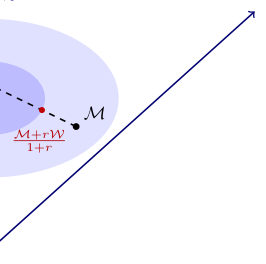
<figcaption class="paper-figure-caption"><b>Fig 1.</b> Figure 1: Witness robustness as a relaxation of the admixed noise. All sets live in the space of N-tuples of observables: the free measurements MF sit inside all measurements M, both bounded convex sets, which in turn sit inside the unbounded product cone [cone∗(F)]×N of witness tuples—tuples W = {Wi} whose every component is a free-state witness—with apex at the zero tuple 0. The witness robustness mixes the resourceful target M with such a tuple W—not with another measurement—until the convex combination (M + rW)/(1 + r) first meets MF; the least weight r is RF MF(M). Restricting the noise instead to M or to MF recovers the generalized and standard robustness, so that RF MF ≤RMF ≤Rstd MF .</figcaption>
</figure>
<figure class="paper-figure-card">
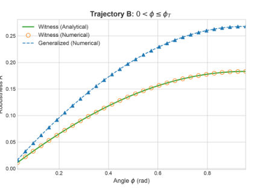
<figcaption class="paper-figure-caption"><b>Fig 2.</b> Figure 2: Witness robustness and generalized robustness along two single-qubit Bloch-vector trajectories. For the projective measurement M = (Π, I −Π), with Π = 1</figcaption>
</figure>
<figure class="paper-figure-card">
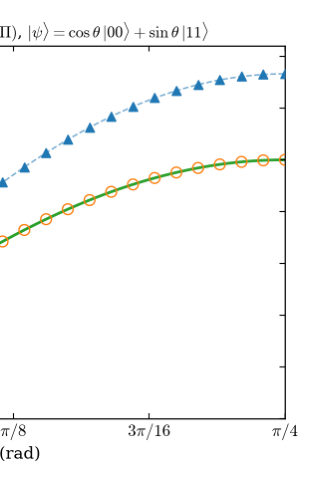
<figcaption class="paper-figure-caption"><b>Fig 3.</b> Figure 3: Witness robustness and generalized robustness of a two-qubit projective measure- ment. The measurement is M = (Π, I−Π), where Π = |ψ(θ)⟩⟨ψ(θ)| and |ψ(θ)⟩= cos θ|00⟩+sin θ|11⟩, with θ ∈[0, π/4]. The witness robustness RPPT PPT = C/4, where C = sin(2θ) is the concurrence of |ψ(θ)⟩, is evaluated analytically (green line) and numerically (orange circles). The generalized robust- ness is evaluated numerically (blue dashed line and triangles).</figcaption>
</figure>
</div>

<p><strong>Summary.</strong> This paper develops the concept of 'witness robustness' to quantify how much a quantum measurement exceeds what is achievable using only 'free states.' It establishes this measure through an operational interpretation based on discrimination success probabilities. This provides a powerful, generalized tool for resource quantification in quantum information theory.</p>
<p><strong>Why it may be interesting.</strong> It provides a sophisticated, generalized tool to quantify resource advantages in quantum tasks where standard measures fail due to limitations on state preparation or noise modeling.</p>
<details>
<summary>Detailed structure</summary>
<p><strong>Main problem.</strong> The paper introduces and characterizes 'witness robustness' as a novel resource quantifier for quantum measurements, designed to measure the advantage of a measurement over free measurements.</p>
<p><strong>Main result.</strong> Witness robustness quantifies the maximal advantage in discriminating an ensemble of only free states. It is shown that this measure is not always faithful but provides a direct operational characterization via success probabilities in discrimination games.</p>
<p><strong>Method.</strong> The authors define witness robustness by considering noise drawn from the dual cone of free states (free-state witnesses), leading to an infimum minimization problem solved using minimax theorems.</p>
<p><strong>Model / system.</strong> The framework is general quantum information theory, analyzing measurements ($M$) within a resource theory context defined by a set of 'free states' ($F$). Specific applications include single-qubit magic and two-qubit PPT entanglement.</p>
<p><strong>Key observables.</strong> Witness robustness ($  ext{RF}_{   ext{MF}}(M)$), success probabilities in state discrimination games, and various forms of generalized/standard robustness measures.</p>
<p><strong>Important parameters / regimes.</strong> The geometry of the free state set ($F$) dictates the behavior of the resource measure; the analysis compares different norms (e.g., $\ell_\infty$ vs. Euclidean).</p>
<p><strong>Assumptions / limitations.</strong> The core assumption is that noise can be modeled by tuples of free-state witnesses, which relaxes constraints compared to standard robustness measures.</p>
<p><strong>Figures summary.</strong> Figure 1 illustrates how witness robustness mixes the measurement $M$ with a tuple of witnesses $W$, showing the relationship between different sets defining the resource measure.</p>
<p><strong>Paper structure.</strong> The paper progresses by first introducing the concept, establishing its operational interpretation via discrimination games (Theorem 1), deriving fundamental properties like convexity and monotonicity, and concluding with analytical results for specific physical examples.</p>
</details>
<details>
<summary>Abstract</summary>
<p>We introduce the witness robustness of quantum measurements, a resource quantifier whose admissible noise consists of tuples of free-state witnesses rather than physical measurements. We establish its operational interpretation: it quantifies the maximal advantage that a measurement can provide over free measurements in discriminating an ensemble composed entirely of free states. Unlike the standard and generalized robustnesses, the witness robustness is not faithful in general, reflecting the fact that a resourceful measurement need not be useful when only free states can be prepared. We identify conditions under which faithfulness is recovered and show that, in resource theories admitting a resource-destroying map, the witness robustness vanishes for every measurement. We also establish fundamental properties, including convexity and monotonicity. Finally, we derive analytical results for projective measurements in single-qubit magic and for binary pure-state projective measurements in the two-qubit PPT entanglement theory.</p>
</details>
<p><sub><a href="#top">↑ back to top</a></sub></p>

<p><a id="paper-2607.27957"></a></p>
<h3 id="exponential-advantage-of-multipartite-entanglement-over-quantum-communication-with-applications-to-bounded-storage-cryptography"><a href="http://arxiv.org/abs/2607.27957v1">Exponential Advantage of Multipartite Entanglement over Quantum Communication with Applications to Bounded-Storage Cryptography</a></h3>
<p><strong>Authors:</strong> Ananya Chakraborty, Manik Banik, Ronald de Wolf<br>
<strong>Type:</strong> theory · <strong>Category:</strong> quantum information and computing · <strong>PDF:</strong> <a href="https://arxiv.org/pdf/2607.27957v1">https://arxiv.org/pdf/2607.27957v1</a><br>
<strong>Analysis basis:</strong> full PDF text, analyzed in chunks
<strong>Topic relevance:</strong> 🔥 <code>entanglement &amp; information structure</code> <strong>4/5</strong> · <code>analog quantum simulation</code> <strong>1/5</strong> · <code>non-equilibrium dynamics</code> <strong>1/5</strong></p>
<div class="figure-strip-hint">↔ Scroll figures horizontally</div>
<div class="paper-figures-scroll">
<figure class="paper-figure-card">
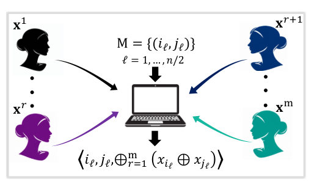
<figcaption class="paper-figure-caption"><b>Fig 1.</b> Figure 1. Multipartite Hidden Matching task (mHMn). It involves m spatially separated senders (Alices), where the rth Alice receives a string xr ∈{0, 1}n. Bob receives a perfect matching M ∈Mn/2 on [n]. His goal is to output a triple iℓ, jℓ, Lm r=1(xr iℓ⊕xr jℓ) for some edge (iℓ, jℓ) ∈M. The Boolean variant mBHMn is a related decision problem defined in the text.</figcaption>
</figure>
<figure class="paper-figure-card">
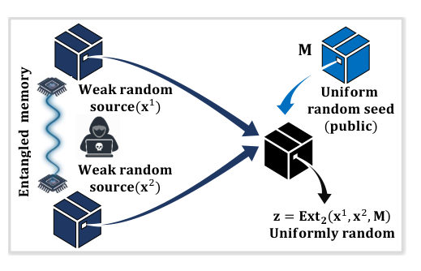
<figcaption class="paper-figure-caption"><b>Fig 2.</b> Figure 2. Multipartite Hidden Matching extractor. Two in- dependent weak random sources x1 and x2, together with a uniformly random public seed M, are processed by the mul- tipartite Hidden Matching extractor to produce an extracted key z = Ext2(x1, x2, M), that is statistically close to uniform. Adversaries with unentangled memory require polynomial-size quantum side-information to attack the protocol. In contrast, pre-shared entanglement enables an adversary to compromise the extractor using only O(log n) qubits of storage per source, establishing an exponential separation between entangled and unentangled quantum memory.</figcaption>
</figure>
</div>

<p><strong>Summary.</strong> This work proves that shared multipartite quantum entanglement provides an exponential advantage over classical or unentangled quantum resources when solving complex distributed tasks like the Hidden Matching problem. This fundamental separation is then applied to construct a secure, exponentially stronger seeded randomness extractor, highlighting the computational power of genuine multipartite correlations.</p>
<p><strong>Why it may be interesting.</strong> While focused on quantum information theory rather than AMO physics directly, the techniques used—analyzing multipartite correlations and entanglement advantages in communication tasks—are foundational for understanding resource theories relevant to quantum simulation or networking protocols involving multiple interacting subsystems.</p>
<details>
<summary>Detailed structure</summary>
<p><strong>Main problem.</strong> To establish an exponential communication advantage provided by shared multipartite quantum entanglement over protocols relying only on classical or unentangled quantum communication.</p>
<p><strong>Main result.</strong> The paper demonstrates that for tasks like the Multipartite Hidden Matching, shared GHZ entanglement allows for exponentially smaller classical communication complexity compared to scenarios without such pre-shared entanglement. This separation is also shown in cryptographic applications involving randomness extractors.</p>
<p><strong>Method.</strong> The authors employ quantum information theory tools, including analyzing communication complexity bounds using Fourier analysis and bounding trace distances between quantum states derived from the task structure.</p>
<p><strong>Model / system.</strong> The core model involves multipartite quantum entanglement, specifically utilizing Greenberger-Horne-Zeilinger (GHZ) states among multiple spatially separated senders. The tasks analyzed are the Multipartite Hidden Matching problem and seeded two-source randomness extraction.</p>
<p><strong>Key observables.</strong> Communication complexity ($    ext{C}<em tvd>{\parallel}$), trace distance ($|\cdot|</em>$ or $\|\cdot\|_{	ext{tr}}$), and quantum memory size required for an adversary to break security.</p>
<p><strong>Important parameters / regimes.</strong> The separation is exponential, contrasting polynomial/logarithmic bounds (e.g., $\log n$ vs. $\sqrt{n}$) depending on the availability of entanglement.</p>
<p><strong>Assumptions / limitations.</strong> The analysis relies heavily on bounding expectations over random choices and utilizing specific quantum inequalities (like hypercontractive inequalities) to establish the separation.</p>
<p><strong>Figures summary.</strong> Figure 1 illustrates the Multipartite Hidden Matching task setup. Figure 2 depicts the process for a multipartite extractor combining two weak sources and a public seed.</p>
<p><strong>Paper structure.</strong> The paper progresses by first defining the communication complexity problem (mHMn), establishing the exponential separation using GHZ states, and then applying this framework to construct and analyze an exponentially separated seeded randomness extractor.</p>
</details>
<details>
<summary>Abstract</summary>
<p>We establish an exponential communication advantage enabled by multipartite quantum entanglement. Building on the bipartite Hidden Matching problem, we introduce a communication task involving multiple spatially separated senders and a single receiver. We show that a shared Greenberger-Horne-Zeilinger state enables completion of this task using only logarithmically many bits of classical communication from each sender. In contrast, without preshared entanglement, any protocol achieving high success probability requires polynomial communication from at least one sender, even when \emph{quantum} communication is allowed. Thus, classical communication assisted by multipartite entanglement can be exponentially more powerful than quantum communication without preshared entanglement. As a cryptographic application, we construct a seeded two-source randomness extractor and establish an exponential separation between entangled and unentangled quantum side-information. Specifically, compromising the extractor with two unentangled quantum states storing information about the two sources, respectively, requires polynomial-size memory, whereas exponentially smaller quantum memory suffices in the presence of a small amount of shared entanglement.</p>
</details>
<p><sub><a href="#top">↑ back to top</a></sub></p>

<p><a id="paper-2607.28533"></a></p>
<h3 id="hubbard-physics-with-ultracold-polar-molecules-on-site-interaction-energies-for-shielded-molecules"><a href="http://arxiv.org/abs/2607.28533v1">Hubbard physics with ultracold polar molecules: on-site interaction energies for shielded molecules</a></h3>
<p><strong>Authors:</strong> Carlin Stewart-Wiese, Joy Dutta, Jeremy M. Hutson<br>
<strong>Type:</strong> theory · <strong>Category:</strong> other · <strong>PDF:</strong> <a href="https://arxiv.org/pdf/2607.28533v1">https://arxiv.org/pdf/2607.28533v1</a><br>
<strong>Analysis basis:</strong> full PDF text, analyzed in chunks
<strong>Topic relevance:</strong> 🔥 <code>analog quantum simulation</code> <strong>4/5</strong> · <code>exotic spin models in light-matter</code> <strong>1/5</strong> · <code>non-equilibrium dynamics</code> <strong>1/5</strong></p>
<div class="figure-strip-hint">↔ Scroll figures horizontally</div>
<div class="paper-figures-scroll">
<figure class="paper-figure-card">
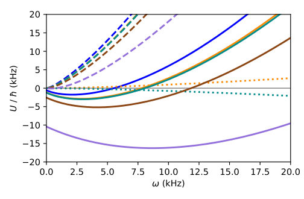
<figcaption class="paper-figure-caption"><b>Fig 1.</b> FIG. 1. On-site interaction energy U as a function of har- monic frequency ω, for NaCs molecules shielded with circu- larly polarized microwaves with ∆/Ω= 1. States that are bound (unbound) at ω = 0 are shown as solid (dashed) lines. Rabi frequencies Ω= 2.5 (blue), 3.4 (orange), 3.5 (green), 5 (brown) and 11 MHz (purple) give scattering lengths a = 5200, 260, −200, −6400 and −100, 000 bohr, respectively. Dotted lines show the results of Eq. 1 for the lowest two val- ues of |a|.</figcaption>
</figure>
<figure class="paper-figure-card">
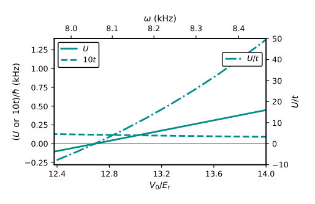
<figcaption class="paper-figure-caption"><b>Fig 2.</b> FIG. 2. On-site interaction energy U (solid, left axis), tun- neling energy t (dashed, left axis) and their ratio U/t (dot- dashed, right axis), as a function of lattice strength and har- monic frequency, near the zero-crossing of U. The calculations are for NaCs with Ω= 3.5 MHz, ∆/Ω= 1 and λ = 1064 nm.</figcaption>
</figure>
</div>

<p><strong>Summary.</strong> This paper calculates the on-site interaction energy for ultracold polar molecules trapped in optical lattices using specialized quantum scattering methods. The key finding is that shielding techniques allow for a tunable interaction regime (U/t) unlike standard atomic systems. This opens the door to studying complex, strongly dipolar Hubbard physics with controlled double occupancy.</p>
<p><strong>Why it may be interesting.</strong> This work directly addresses how strong, controllable dipole interactions in molecular systems can modify fundamental many-body models like the Hubbard model, opening avenues beyond simple atomic approximations.</p>
<details>
<summary>Detailed structure</summary>
<p><strong>Main problem.</strong> The study investigates on-site interaction energies (U) for pairs of shielded ultracold polar molecules confined to the same lattice site.</p>
<p><strong>Main result.</strong> The interaction energy U exhibits behavior distinct from ultracold atoms, potentially becoming negative at weak lattices and crossing zero as lattice strength increases. This enables exploring dipolar Hubbard physics with multiple site occupancy.</p>
<p><strong>Method.</strong> The authors use coupled-channel calculations to solve the correlated 2-particle relative motion Schrödinger equation for both bound and unbound states.</p>
<p><strong>Model / system.</strong> The system involves ultracold polar molecules trapped in optical lattices, where interactions are governed by long-range dipole-dipole potentials modified by microwave shielding. The physics is framed within the context of Hubbard models.</p>
<p><strong>Key observables.</strong> On-site interaction energy (U), tunneling energy (t), and their ratio U/t.</p>
<p><strong>Important parameters / regimes.</strong> Shielding fields, lattice strength ($\omega$), Rabi frequency ($\Omega$), dipole moment ($\mu$).</p>
<p><strong>Assumptions / limitations.</strong> The approach neglects anharmonicity of the confining potential and any extension of Wannier functions into neighboring wells.</p>
<p><strong>Figures summary.</strong> Figure 1 illustrates U vs. harmonic frequency $\omega$ for NaCs, showing solid (bound) and dashed (unbound) lines; Figure 2 plots U, t, and U/t versus lattice strength ($\lambda$).</p>
<p><strong>Paper structure.</strong> The paper analyzes the correlated two-particle problem by separating relative and center-of-mass motions. It compares results for unbound pairs and 2-body bound states to demonstrate tunable dipolar Hubbard physics.</p>
</details>
<details>
<summary>Abstract</summary>
<p>We explore on-site interaction energies $U$ for pairs of shielded ultracold molecules on the same lattice site. We use 2-dimensional effective potentials appropriate for microwave shielding, which have dipole-dipole character at long range but feature a very large repulsive core when the two molecules come close together. This causes very strong correlation between the motions of two molecules on the same site. We find behavior very different from that for ultracold atoms: in particular, there are states for which $U$ is negative for weak lattices but crosses zero to positive values as the lattice strength increases. This behavior is found for both unbound pairs and 2-body bound states. The latter will give access to previously unexplored types of strongly dipolar Hubbard physics with multiple site occupancy.</p>
</details>
<p><sub><a href="#top">↑ back to top</a></sub></p>

<p><a id="paper-2607.28149"></a></p>
<h3 id="efficient-atom-rearrangements-for-quantum-error-correction-primitives-with-a-single-aod"><a href="http://arxiv.org/abs/2607.28149v1">Efficient atom rearrangements for quantum error correction primitives with a single AOD</a></h3>
<p><strong>Authors:</strong> Tom Hartweg, Asier Piñeiro Orioli, Hugo Perrin, Samuel Crew<br>
<strong>Type:</strong> theory · <strong>Category:</strong> quantum information and computing · <strong>PDF:</strong> <a href="https://arxiv.org/pdf/2607.28149v1">https://arxiv.org/pdf/2607.28149v1</a><br>
<strong>Analysis basis:</strong> full PDF text, analyzed in chunks
<strong>Topic relevance:</strong> 🔥 <code>QC/QI experiment</code> <strong>4/5</strong> · <code>Rydberg arrays</code> <strong>1/5</strong></p>
<div class="figure-strip-hint">↔ Scroll figures horizontally</div>
<div class="paper-figures-scroll">
<figure class="paper-figure-card">
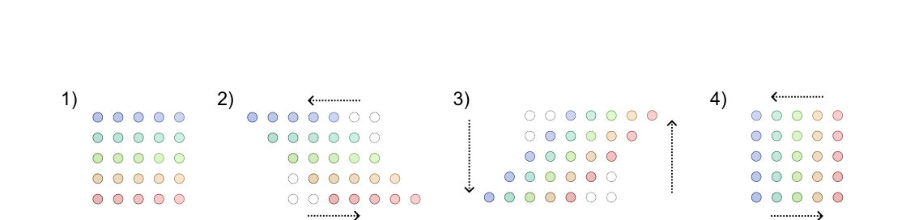
<figcaption class="paper-figure-caption"><b>Fig 1.</b> Figure 2: Paeth decomposition of the 90◦rotation of a 5 × 5 array into three shears. Panels 1–4 show the array after each of the three shears. Here, for each shear, the reference line is chosen to be the middle row/column.</figcaption>
</figure>
<figure class="paper-figure-card">
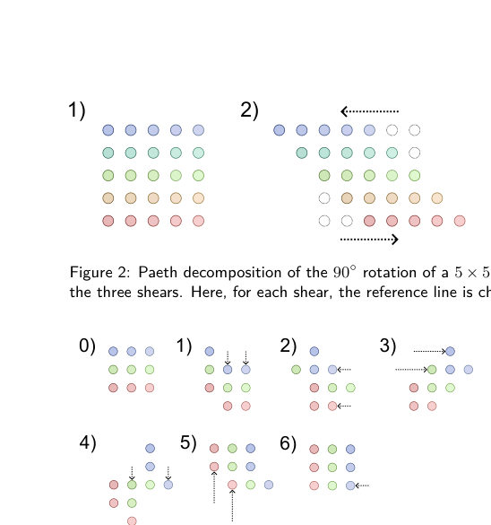
<figcaption class="paper-figure-caption"><b>Fig 2.</b> Figure 3: Optimal 6-move 90◦rotation for d = 3.</figcaption>
</figure>
<figure class="paper-figure-card">
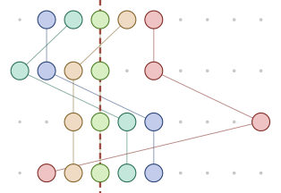
<figcaption class="paper-figure-caption"><b>Fig 3.</b> Figure 5: Reflection of a line of 5 atoms across a mirror axis, implemented via negabinary decomposition. The labels on the right indicate the distance of the stroke at each step.</figcaption>
</figure>
<figure class="paper-figure-card">
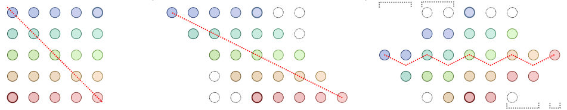
<figcaption class="paper-figure-caption"><b>Fig 4.</b> Figure 6: Approximate rotation by 45◦decomposed as two shears. The dashed red line represents the diagonal of the original configuration (0). The final configuration (2) shows how the diagonal gets stretched and staggered to snap back to the static lattice.</figcaption>
</figure>
<figure class="paper-figure-card">
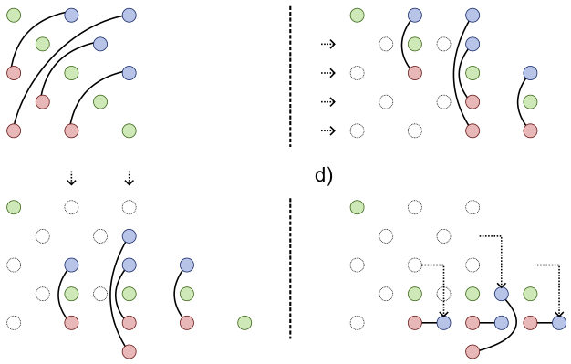
<figcaption class="paper-figure-caption"><b>Fig 5.</b> Figure 7: The compact fold-transversal S-gate protocol for a distance-3 rotated surface code. (a) After half a QEC cycle, the register is in the regular surface code orientation with 2d −1 = 5 non-empty rows and columns; blue/red atoms undergo CZ gates (black arcs) across a 45◦diagonal, green atoms undergo single-qubit S gates. (b) Horizontal shear of all 5 rows with rate 1. (c) Vertical shear of the inner 3 atom-holding columns with rate 1 (the leftmost and rightmost atoms are unaffected). Stages (b) and (c) together align the diagonal with the vertical axis, and the CZ-paired atoms now sit on common vertical lines. (d) The upper partner of each CZ pair translates downward in parallel,...</figcaption>
</figure>
</div>

<p><strong>Summary.</strong> This paper presents novel, highly efficient methods to schedule atomic rearrangements—such as shearing and rotating 2D arrays—necessary for quantum error correction in neutral-atom quantum computers. By using binary and geometric decompositions applied via a single AOD pair, the authors achieve logarithmic scaling in resource costs compared to quadratic scaling from naive approaches. This work significantly advances the feasibility of large-scale, fault-tolerant quantum computation by optimizing physical gate operations.</p>
<p><strong>Why it may be interesting.</strong> This work directly addresses the physical overhead of fault-tolerant quantum computation in neutral atoms. The focus on minimizing movement time through algorithmic decomposition is crucial for realizing high logical throughput, bridging theoretical QEC requirements with practical AMO hardware constraints.</p>
<details>
<summary>Detailed structure</summary>
<p><strong>Main problem.</strong> The core problem is developing highly efficient scheduling algorithms for physically moving atoms to perform necessary geometric rearrangements required by quantum error correction (QEC) primitives.</p>
<p><strong>Main result.</strong> The authors introduce new decomposition methods that achieve logarithmic scaling in the number of moves and significantly reduce time complexity compared to naive atom-by-atom rearrangement schemes.</p>
<p><strong>Method.</strong> They employ (nega-)binary and geometric decompositions, combined with established techniques like Paeth decomposition, to map complex lattice transformations (shear, rotate, reflect) onto minimal AOD sweeps.</p>
<p><strong>Model / system.</strong> The system is a neutral-atom quantum computer utilizing atoms trapped in a static 2D square lattice. Reconfiguration is achieved dynamically using the controlled sweeping of a single crossed acousto-optic deflector (AOD) pair.</p>
<p><strong>Key observables.</strong> Number of AOD strokes ($N_{moves}$), total tweezer distance ($D_{tweezer}$), and constant-jerk movement time ($T_{jerk}$).</p>
<p><strong>Important parameters / regimes.</strong> The linear size of the array, $d$, which dictates the scaling of resources.</p>
<p><strong>Assumptions / limitations.</strong> It is assumed that collision avoidance during movement is always possible, and that the movement time dominates over pickup/release times.</p>
<p><strong>Figures summary.</strong> Figures illustrate various shear schemes (Figure 1) and the decomposition stages for a $90^\circ$ rotation using Paeth decomposition (Figure 2), alongside general protocol visualizations for different distances $d$.</p>
<p><strong>Paper structure.</strong> The paper establishes lower bounds on movement resources, then details specific primitives like shearing, followed by implementing rotations via shearing decompositions (Paeth/binary), and concluding with applications to error correction codes like the surface code.</p>
</details>
<details>
<summary>Abstract</summary>
<p>Neutral-atom quantum computers offer arbitrary connectivity enabled by atom transport. Some logical operations can then be simplified or reduced entirely to geometric rearrangements of the atoms. Minimizing the duration of these movements is therefore essential for high logical throughput. We introduce new primitives to shear, rotate and reflect 2D arrays of atoms in a static lattice using sweeps of a single dynamic crossed acousto-optic deflector (AOD) pair. Using (nega-)binary and geometric decompositions, we achieve an AOD stroke count scaling logarithmically in the linear size of the array. In one example, we use the Paeth decomposition to implement a $90^{\circ}$ rotation for a transversal Hadamard gate in a rotated surface code of distance $d$ in $3\lfloor\log_2(d-1)\rfloor + 4$ AOD strokes and $O(d^{1/3})$ constant-jerk time, against $O(d^2)$ strokes and $O(d^{7/3})$ time for atom-by-atom rearrangement.</p>
</details>
<p><sub><a href="#top">↑ back to top</a></sub></p>

<p><a id="paper-2607.27644"></a></p>
<h3 id="quantum-ldpc-codes-with-design-rate-15-and-good-performance-below-1000-physical-qubits"><a href="http://arxiv.org/abs/2607.27644v1">Quantum LDPC codes with design rate 1/5 and good performance below 1000 physical qubits</a></h3>
<p><strong>Authors:</strong> Yifan Hong<br>
<strong>Type:</strong> both · <strong>Category:</strong> quantum information and computing · <strong>PDF:</strong> <a href="https://arxiv.org/pdf/2607.27644v1">https://arxiv.org/pdf/2607.27644v1</a><br>
<strong>Analysis basis:</strong> full PDF text, analyzed in chunks
<strong>Topic relevance:</strong> 🔥 <code>QC/QI experiment</code> <strong>4/5</strong></p>
<div class="figure-strip-hint">↔ Scroll figures horizontally</div>
<div class="paper-figures-scroll">
<figure class="paper-figure-card">
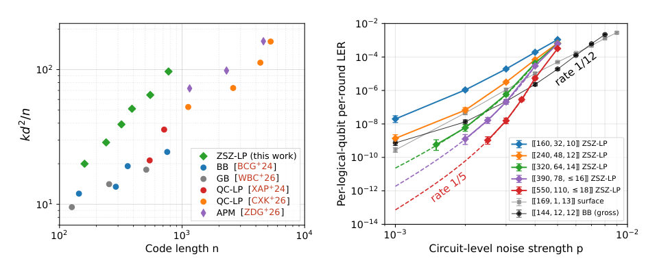
<figcaption class="paper-figure-caption"><b>Fig 1.</b> Figure 1: Left: The memory efficiency improvement kd2/n over the surface code is plotted as a function of the code length n for several high-rate qLDPC codes proposed for near-term implementation, including bivariate bicycle (BB) [BCG+24], generalized bicycle (GB) [WBC+26], quasi-cyclic lifted product (QC-LP) [XAP+24, CXK+26] and Kasai’s construction [Kas26] with affine permutation matrices (APM) [ZDG+26]. Note that kd2/n = 1 for the (rotated) surface code. Right: The XZ-averaged logical error rate (LER) per qubit-round (over d rounds) is plotted as a function of the idling-free circuit-level noise strength p for several candidate ZSZ-LP codes as well as the gross code and d = 13 surface...</figcaption>
</figure>
<figure class="paper-figure-card">
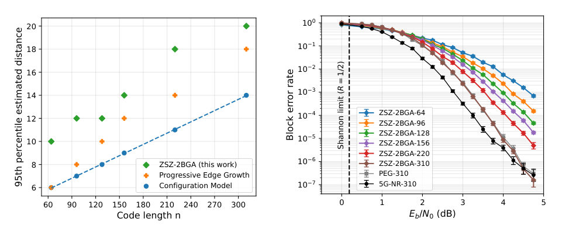
<figcaption class="paper-figure-caption"><b>Fig 2.</b> Figure 2: Left: The 95th percentile distance as a function of the code length n is plotted for three random (3, 6)-regular LDPC ensembles: classical two-block ZSZ (ZSZ-2BGA) codes, the bipartite configuration model [RU08], and the progressive-edge-growth (PEG) algorithm [HEA01]. 1000 codes are sampled from each ensemble, and minimum distances are estimated with 10,000 iterations of QDistEvol. A linear fit is applied to the configuration model since its (3, 6)-regular ensemble is statistically known to be an asymptotically good family [RU08]. Right: The block error rate under the additive white Gaussian noise (AWGN) channel with binary phase shift keying (BPSK) modulation is plotted for the...</figcaption>
</figure>
<figure class="paper-figure-card">
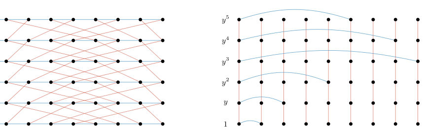
<figcaption class="paper-figure-caption"><b>Fig 3.</b> Figure 3: The left and right Cayley graphs of the ZSZ group ZSZ9,6,2 drawn on the ℓ1 × ℓ2 grid of group elements xiyj (black dots), with the x-exponent i as the horizontal coordinate and the y-exponent j as the vertical coordinate. Edges denote multiplication by the generators x (blue) and y (red). Left: The left Cayley graph. Left multiplication by x is an untwisted horizontal shift xiyj 7→xi+1yj, while left multiplication by y is twisted xiyj 7→xqiyj+1 via (6a), scaling the x-coordinate by q on each upward step. Right: The right Cayley graph. Here right multiplication by y is the untwisted vertical shift xiyj 7→xiyj+1, whereas right multiplication by x carries a twisted, row-dependent...</figcaption>
</figure>
<figure class="paper-figure-card">
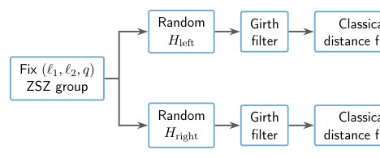
<figcaption class="paper-figure-caption"><b>Fig 4.</b> Figure 4: Filter pipeline for candidate ZSZ-LP code discovery.</figcaption>
</figure>
<figure class="paper-figure-card">
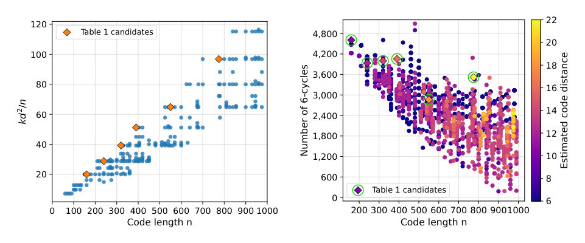
<figcaption class="paper-figure-caption"><b>Fig 5.</b> Figure 5: Pareto frontiers are plotted for two ZSZ-LP code ensembles, sampled using parts of the code discovery pipeline in Figure 4. Left: The efficiency–length Pareto frontier. For this ensemble, we forgo the quantum girth filter and try to maximize the memory efficiency kd2/n. To reduce clutter, we only plot the codes within 50% of the observed Pareto front. All displayed code distances are estimated with at least 20,000 iterations of QDistEvol, with the ones near the frontier having at least 100,000 iterations. Right: The cycle–length Pareto frontier. For this ensemble, we forgo all distance filters and try to minimize the number of short cycles in the Tanner graphs; all displayed codes...</figcaption>
</figure>
</div>

<p><strong>Summary.</strong> This paper presents a novel family of quantum LDPC codes designed to improve fault tolerance in near-term quantum computers. By leveraging group symmetries, they achieve high code rates (1/5) while keeping the physical qubit count manageable ($\lesssim 1000$). The work validates these codes through detailed circuit simulations and benchmarking against state-of-the-art decoding hardware.</p>
<p><strong>Why it may be interesting.</strong> It directly addresses hardware constraints by providing concrete, implementable code structures (ZSZ-LP) optimized for specific physical platforms (trapped ions/neutral atoms), bridging the gap between theoretical bounds and near-term device capabilities.</p>
<details>
<summary>Detailed structure</summary>
<p><strong>Main problem.</strong> The challenge is discovering finite-length quantum Low-Density Parity-Check (qLDPC) code instances that exhibit good practical performance for fault-tolerant quantum computation.</p>
<p><strong>Main result.</strong> The authors introduce a new family of qLDPC codes with design rate 1/5, demonstrating high encoding efficiency and achieving low logical error rates in the near-term regime using physical qubits below 1000.</p>
<p><strong>Method.</strong> The construction involves building these codes via the balanced product of classical LDPC codes sharing non-abelian group symmetries, followed by detailed circuit simulation and GPU benchmarking for decoding.</p>
<p><strong>Model / system.</strong> The work is tailored for near-term quantum processors like trapped ions and neutral atoms, focusing on physical implementations involving syndrome extraction circuits scheduled for reconfigurable atom arrays.</p>
<p><strong>Key observables.</strong> Logical error rate (LER) per qubit-round, circuit distance ($d_{circ}$), decoding latencies (1-2 ms), and memory efficiency ratios ($ ext{k}d^2/n$).</p>
<p><strong>Important parameters / regimes.</strong> Design rate of 1/5; physical size below 1000 qubits; idling-free noise strength of $0.1\%$.</p>
<p><strong>Assumptions / limitations.</strong> The practical performance relies on assumptions regarding hardware compatibility, the specific noise model used, and the potential suboptimality of the Relay-BP decoder at low noise.</p>
<p><strong>Figures summary.</strong> Figures illustrate memory efficiency vs. size and LER vs. noise strength; tables detail code parameters (Table 1) and gate schedules/latencies across different GPUs (Tables 14, 16).</p>
<p><strong>Paper structure.</strong> The paper progresses from establishing the need for high-rate qLDPC codes to detailing the ZSZ group construction methods, proving structural limitations like unavoidable 4-cycles in symmetric products, and finally validating performance through circuit simulations and decoding benchmarks.</p>
</details>
<details>
<summary>Abstract</summary>
<p>Constant-rate quantum low-density parity-check (LDPC) codes promise fault-tolerant quantum computation with constant spatial overhead in the asymptotic limit. Nonetheless, discovering finite-length code instances with good practical performance remains challenging. We introduce a new family of quantum LDPC codes with design rate $1/5$ and check weight $9$ that approaches the teraquop memory regime per qubit-round with several hundred physical qubits, under idling-free circuit-level noise of strength $0.1\%$ and GPU-accelerated Relay-belief-propagation (Relay-BP) decoding with average latencies around 1-2 ms, a regime relevant to trapped-ion and neutral-atom processors. The construction involves the balanced product of classical LDPC codes with design rate $1/2$ that share non-abelian $\mathbb{Z}_\ell \rtimes \mathbb{Z}_m$ group symmetries, which may be of independent interest for classical error correction. We build syndrome extraction circuits tailored to reconfigurable atom arrays using a simple greedy scheduler, with single-round rearrangement times around 30-60 ms using present hardware specifications, and substantial room for future improvements. We also construct logical Pauli bases that are equivariant with respect to the group symmetry, which can significantly compress the design space for code surgery. Together, these results further advance the practicality of constant-rate quantum LDPC codes for near-term, fault-tolerant quantum computers.</p>
</details>
<p><sub><a href="#top">↑ back to top</a></sub></p>

<p><a id="paper-2607.27473"></a></p>
<h3 id="closed-timelike-curve-decoding-on-quantum-hardware"><a href="http://arxiv.org/abs/2607.27473v1">Closed Timelike Curve Decoding on Quantum Hardware</a></h3>
<p><strong>Authors:</strong> Sai Nandan Morapakula, Kazuki Ikeda<br>
<strong>Type:</strong> both · <strong>Category:</strong> quantum information and computing · <strong>PDF:</strong> <a href="https://arxiv.org/pdf/2607.27473v1">https://arxiv.org/pdf/2607.27473v1</a><br>
<strong>Analysis basis:</strong> full PDF text, analyzed in chunks
<strong>Topic relevance:</strong> <code>measurement-induced transitions</code> <strong>3/5</strong> · <code>methods for driven-dissipative</code> <strong>3/5</strong> · <code>quantum measurements</code> <strong>3/5</strong> · <code>correlated / nonlocal dissipation</code> <strong>2/5</strong> · <code>driven-dissipative phase transition</code> <strong>2/5</strong> · <code>entanglement &amp; information structure</code> <strong>2/5</strong> · <code>Keldysh / 2PI / non-Gaussian methods</code> <strong>1/5</strong> · <code>QC/QI experiment</code> <strong>1/5</strong> · <code>non-equilibrium dynamics</code> <strong>1/5</strong> · <code>non-equilibrium universality</code> <strong>1/5</strong></p>
<div class="figure-strip-hint">↔ Scroll figures horizontally</div>
<div class="paper-figures-scroll">
<figure class="paper-figure-card">
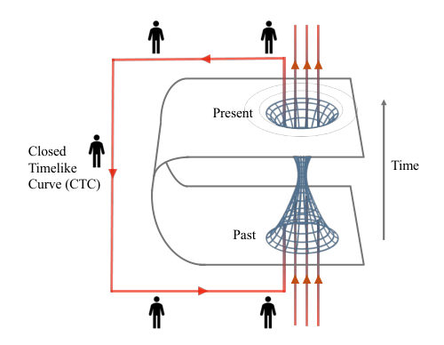
<figcaption class="paper-figure-caption"><b>Fig 1.</b> FIG. 1. Schematic illustration of a closed timelike curve (CTC). A worldline traversing a wormhole-like geometry con- nects the present to its own past, forming a closed loop in spacetime. The figure motivates the finite-dimensional quantum-information models studied below.</figcaption>
</figure>
<figure class="paper-figure-card">
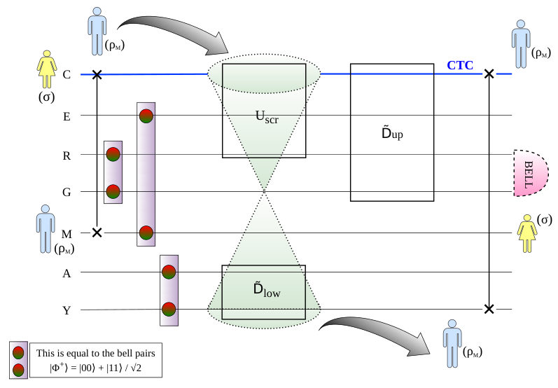
<figcaption class="paper-figure-caption"><b>Fig 2.</b> FIG. 2. Register-separated ideal Deutsch-loop construction in the register order C, E, R, G, M, A, Y . The first SWAP transfers the prepared message ρM from M to C and routes the incoming CTC state σ to the dump wire Mdump, which remains a spectator thereafter. The scrambler Uscr acts on C, E, R, spreading the message information across these registers. The aligned blocks eDup and eDlow are the upper and lower graphical components of the same decoder dilation and together recover the message on Y . Algebraically, the active operation has the factorized form IMdump ⊗WC,E,R,G,A,Y . Every time we observe a bell pair on (R, G) or (E, M) or (A, Y), the decoder recovers ρM on Y , the final SWAP...</figcaption>
</figure>
<figure class="paper-figure-card">
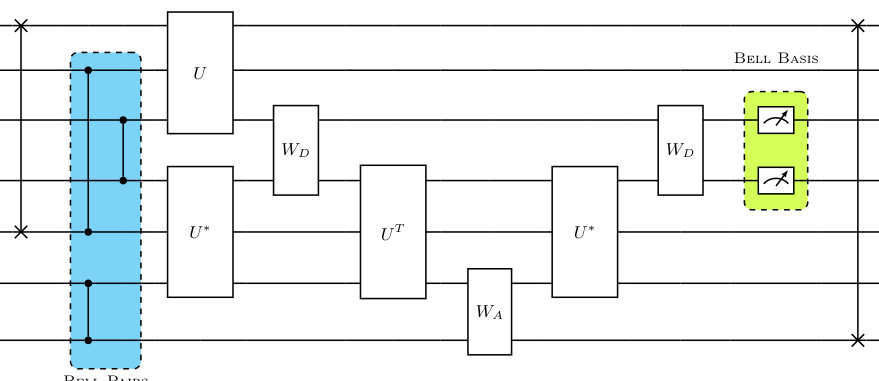
<figcaption class="paper-figure-caption"><b>Fig 3.</b> FIG. 3. Single-qubit, seven-qubit amplitude-amplified decoder circuit used in the hardware study. The first SWAP moves the prepared message ρM from M into C. In this hardware convention the would-be CTC input is initialized, so the post-SWAP wire labelled M is clean and can be reused inside the Bell-pair/conjugate-decoder block. The register-separated arbitrary-σ version is shown in Fig. 2.</figcaption>
</figure>
<figure class="paper-figure-card">
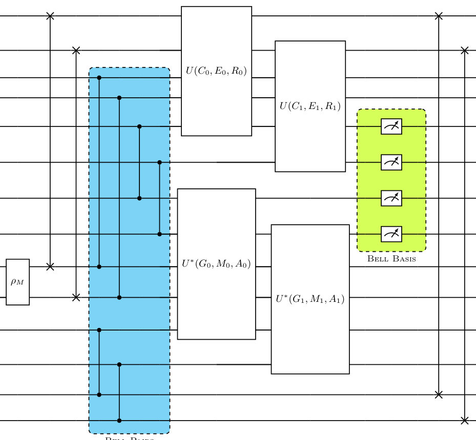
<figcaption class="paper-figure-caption"><b>Fig 4.</b> FIG. 4. Probabilistic Yoshida–Kitaev decoder used as a Lloyd-type post-selected emulation for a multi-qubit message. The would-be CTC input is initialized in this compressed circuit, so the post-SWAP wires labelled M0, M1 can be used as auxiliary decoder wires. Runs are retained when the Bell measurements on (R0, G0) and (R1, G1) give the selected |Φ+⟩outcomes. The register-separated Deutsch replacement-channel circuit is the ideal construction in Fig. 2.</figcaption>
</figure>
<figure class="paper-figure-card">
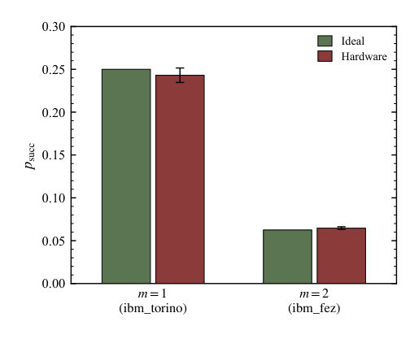
<figcaption class="paper-figure-caption"><b>Fig 5.</b> FIG. 5. Post-selection probability for the one- and two-qubit decoder-emulation circuits. The ideal values are psucc = 1/4 for m = 1 and psucc = 1/16 for m = 2. The hardware esti- mates are consistent with these Bell-projection probabilities within the displayed confidence intervals, confirming the ex- pected sampling overhead for the selected branch.</figcaption>
</figure>
</div>

<p><strong>Summary.</strong> This paper analyzes decoding information encoded within a theoretical Closed Timelike Curve framework on quantum hardware. It establishes the ideal fixed point for this process and then rigorously tests practical implementations by simulating and measuring fidelity using advanced error mitigation techniques. The work provides quantitative diagnostics on how noise affects the recovery of quantum information across complex, time-looping circuits.</p>
<p><strong>Why it may be interesting.</strong> While focused on CTCs, the rigorous error characterization using Loschmidt echoes and the comparison of different resource scaling techniques (post-selection vs. dynamic feedforward) are highly relevant to understanding noise resilience in any complex quantum computation protocol.</p>
<details>
<summary>Detailed structure</summary>
<p><strong>Main problem.</strong> The study investigates how quantum information encoded via Closed Timelike Curves (CTCs) can be decoded on quantum hardware, particularly when considering noise effects.</p>
<p><strong>Main result.</strong> The ideal circuit model predicts a unique fixed point for the CTC-input map ($\sigma^* = 
ho_M$), and hardware simulations confirm expected scaling overheads while quantifying noise impact via fidelity measurements.</p>
<p><strong>Method.</strong> The authors combine theoretical derivations of induced maps with practical quantum circuit implementations, utilizing post-selection, classical feedback iterations, and advanced error mitigation techniques like ZNE.</p>
<p><strong>Model / system.</strong> The model is a finite-dimensional quantum circuit implementing a Deutsch consistency loop containing a Hayden–Preskill/Yoshida–Kitaev recovery map. It involves multiple registers (CTC, Message, etc.) interacting via SWAPs and decoding operations.</p>
<p><strong>Key observables.</strong> Message fidelity ($F_{	ext{msg}}$), post-selection probability ($p_{	ext{succ}}$), quantum geometric susceptibility ($\Omega$), and Pauli expectation values ($\langle X 
angle, \langle Y 
angle, \langle Z 
angle$).</p>
<p><strong>Important parameters / regimes.</strong> Noise parameter $\delta$, message dimension $m$, and circuit parameters like rotation angles $(	heta, \phi)$.</p>
<p><strong>Assumptions / limitations.</strong> The analysis relies on an ideal circuit model for theoretical proofs, while hardware sections approximate this using post-selection or classical feedback loops.</p>
<p><strong>Figures summary.</strong> Figures illustrate the CTC schematic, the register-separated Deutsch loop construction, and detailed diagnostics like Loschmidt echo probabilities ($P_{00}(\delta)$) comparing simulation to hardware fits.</p>
<p><strong>Paper structure.</strong> The paper progresses from establishing the theoretical ideal fixed point ($\sigma^* = 
ho_M$) using circuit theory, through implementing approximate decoding methods (Lloyd-type/classical feedback), and finally characterizing performance on quantum hardware using echo measurements and fidelity analysis.</p>
</details>
<details>
<summary>Abstract</summary>
<p>Deutsch closed timelike curves (D-CTCs) are described by a fixed-point condition for a chronology-violating register. We study a finite-dimensional circuit model that places a Hayden--Preskill/Yoshida--Kitaev recovery map inside such a consistency loop. A register-routing construction makes the Deutsch map explicit: an initial SWAP moves the incoming CTC state to an idle dump register, the scrambler and decoder act on the remaining active registers, and a final SWAP writes the recovered message back to the CTC register. When the active branch recovers the message, the induced map on the CTC register is the replacement channel \(σ\mapsto ρ_M\), with the unique fixed point \(ρ_M\). We implement the associated Lloyd-type post-selected decoder circuits on quantum hardware and formulate a classical-feedback iteration for the experimentally estimated map. Qiskit simulations and IBM-hardware data for single-qubit instances quantify decoder fidelity, post-selection overhead, routing-dependent noise, and quantum-geometric susceptibility.</p>
</details>
<p><sub><a href="#top">↑ back to top</a></sub></p>

<p><a id="paper-2607.28458"></a></p>
<h3 id="field-selected-topological-buffering-in-a-disordered-skyrmion-crystal"><a href="http://arxiv.org/abs/2607.28458v1">Field-Selected Topological Buffering in a Disordered Skyrmion Crystal</a></h3>
<p><strong>Authors:</strong> Wenyu Su, Nvsen Ma, Chen Cheng, Hong-Gang Luo<br>
<strong>Type:</strong> theory · <strong>Category:</strong> disordered systems and neural networks · <strong>PDF:</strong> <a href="https://arxiv.org/pdf/2607.28458v1">https://arxiv.org/pdf/2607.28458v1</a><br>
<strong>Analysis basis:</strong> full PDF text, analyzed in chunks
<strong>Topic relevance:</strong> <code>analog quantum simulation</code> <strong>3/5</strong> · <code>exotic spin models in light-matter</code> <strong>3/5</strong> · <code>spintronics-quantum-optics interface</code> <strong>3/5</strong> · <code>driven-dissipative phase transition</code> <strong>2/5</strong> · <code>non-equilibrium dynamics</code> <strong>2/5</strong> · <code>non-equilibrium universality</code> <strong>2/5</strong> · <code>Frenkel-Kontorova</code> <strong>1/5</strong> · <code>Keldysh / 2PI / non-Gaussian methods</code> <strong>1/5</strong> · <code>methods for driven-dissipative</code> <strong>1/5</strong></p>
<div class="figure-strip-hint">↔ Scroll figures horizontally</div>
<div class="paper-figures-scroll">
<figure class="paper-figure-card">
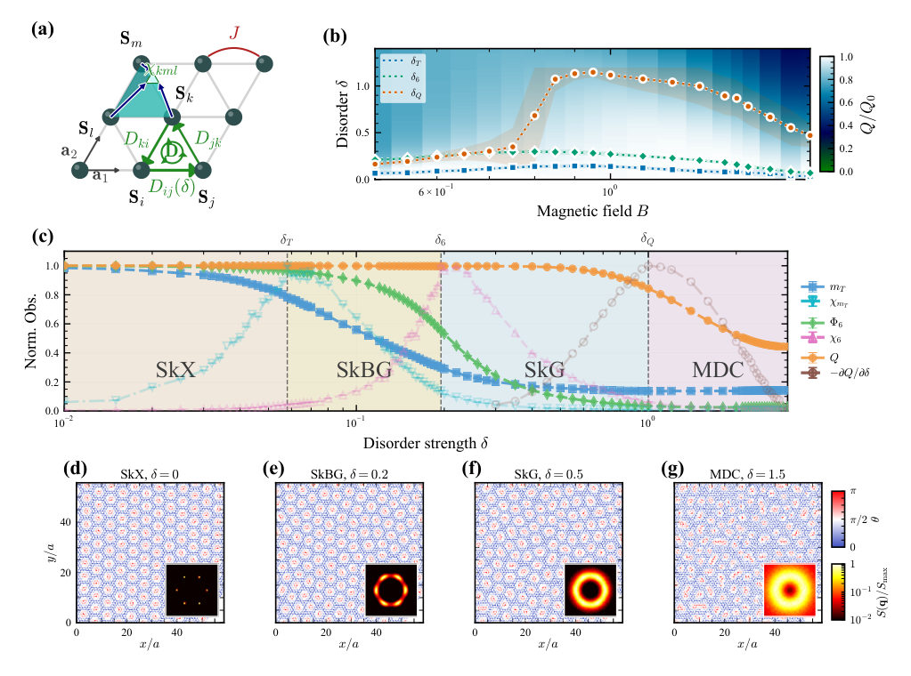
<figcaption class="paper-figure-caption"><b>Fig 1.</b> FIG. 1. Triangular-lattice geometry, field-dependent disorder scales, and texture evolution. (a) Triangular lattice with primitive vectors a1 and a2, nearest-neighbor exchange J, bond-directed DM interactions Dij, and the scalar spin chirality associated with an oriented elementary triangle. (b) Magnetic-field–disorder map obtained on a 90 × 90 lattice. The background color represents the normalized total topological charge Q/Q0. Blue squares, green diamonds, and orange circles denote the characteristic disorder strengths δT , δ6, and δQ, respectively. (c) Normalized translational order parameter mT , sixfold bond-orientational amplitude Φ6, and total topological charge Q/Q0 at B = 1.2 on a...</figcaption>
</figure>
<figure class="paper-figure-card">
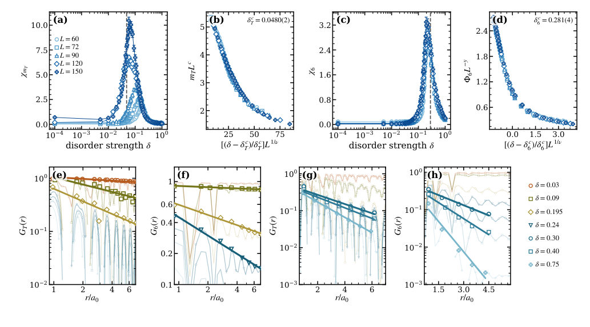
<figcaption class="paper-figure-caption"><b>Fig 2.</b> FIG. 2. Finite-size scaling and crystalline correlations at B = 1.2(a),(c) Translational and sixfold susceptibilities, χmT and χ6, respectively, as functions of disorder strength δ for lattice sizes L = 60, 72, 90, 120, and 150. (b),(d) Finite-size collapses of the translational order parameter mT and sixfold bond-orientational amplitude Φ6, respectively, using the scaled variables indicated on the axes. The optimized collapses give δc T = 0.0480(2) and δc 6 = 0.281(4). (e),(f) Translational and bond-orientational correlation functions, GT (r) and G6(r), displayed on log–log scales for the disorder strengths listed at right.(g),(h) Semilogarithmic representations of GT (r) and G6(r),...</figcaption>
</figure>
<figure class="paper-figure-card">
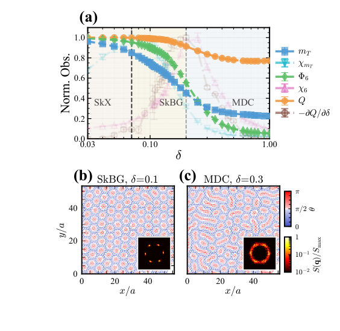
<figcaption class="paper-figure-caption"><b>Fig 3.</b> FIG. 3. The texture evolution at lower field. (a) Nor- malized observables along the B = 0.54 cut on a 150 × 150 lattice. Translational order is already fragile near weak disor- der, while the sixfold susceptibility and topological derivative respond within the same narrow disorder interval, δ6 ≃δQ, in contrast to the separated high-field route. (b)–(d) Representa- tive real-space snapshots and corresponding full-configuration structure factors on a 60×60 lattice. Weak disorder mainly dis- orders positions while preserving recognizable skyrmion cores; stronger disorder elongates and connects the cores, producing a bimeron-rich disordered texture rather than an extended topological buffer.</figcaption>
</figure>
</div>

<p><strong>Summary.</strong> This work investigates how disorder affects skyrmion crystals by simulating a chiral magnet with random interactions. The key finding is that the magnetic field can decouple structural degradation from the loss of total topological charge. This separation defines a 'topological buffer,' proving it as a tunable mechanism for stabilizing topological textures in noisy environments.</p>
<p><strong>Why it may be interesting.</strong> The concept of 'topological buffering' suggests a tunable mechanism for protecting topological information against structural noise, which has parallels in understanding robustness in complex quantum systems or fault tolerance.</p>
<details>
<summary>Detailed structure</summary>
<p><strong>Main problem.</strong> The study aims to determine if quenched disorder destroys crystalline order and topological character of skyrmion textures simultaneously, or if there is a separation between these two processes.</p>
<p><strong>Main result.</strong> The magnetic field acts as a control knob to separate crystalline disordering from topological charge loss, establishing 'topological buffering' as a mechanism for maintaining robust topological textures in structurally disordered media.</p>
<p><strong>Method.</strong> Large-scale simulations and finite-size scaling analysis were used to monitor various structural and topological order parameters across different disorder strengths.</p>
<p><strong>Model / system.</strong> The model is a two-dimensional triangular-lattice chiral magnet subjected to quenched disorder in the Dzyaloshinskii–Moriya (DM) interactions. The Hamiltonian includes exchange, DM, and external magnetic field terms.</p>
<p><strong>Key observables.</strong> Translational order parameter ($m_T$), sixfold bond-orientational amplitude ($\Phi_6$), total topological charge ($Q$), and corresponding susceptibilities ($\chi_{mT}, \chi_6$).</p>
<p><strong>Important parameters / regimes.</strong> The magnetic field strength ($B$) is the key control knob, which dictates whether disordering occurs via distinct structural or topological pathways.</p>
<p><strong>Assumptions / limitations.</strong> The analysis relies on identifying critical disorder strengths ($\delta_T, \delta_6, \delta_Q$) where different types of order break down.</p>
<p><strong>Figures summary.</strong> Figures illustrate the evolution from a Skyrmion Crystal (SkX) through distinct glassy regimes ($  ext{SkBG} 
ightarrow   ext{SkG}$) within the topological buffer at high fields, contrasting this with a direct transition observed at lower fields.</p>
<p><strong>Paper structure.</strong> The paper first establishes the physical model and diagnostics. It then analyzes the behavior at high magnetic fields to define the separated disordering routes (the buffer). Finally, it contrasts this with low-field results to show how the field controls the separation of these processes.</p>
</details>
<details>
<summary>Abstract</summary>
<p>Quenched disorder can disrupt crystalline order without immediately destroying the topology of its constituent textures, but the relation between these processes in skyrmion crystals remains unclear. Using large-scale simulations of a triangular-lattice chiral magnet with random DM interactions, we show that the magnetic field selects between two disordering routes. At high fields, global translational coherence is lost at a weak-disorder scale, while sixfold bond-orientational order survives to a larger disorder strength and the total topological charge remains nearly locked up to a substantially larger scale. The resulting interval defines a topological buffer containing a Bragg-glass- like skyrmion regime followed by a skyrmion-glass regime. Finite-size scaling, spatial correlations, defect statistics, and spin autocorrelations support their distinct structural and glassy character. At lower fields, bond-orientational disordering nearly coincides with topological reconstruction, eliminating the skyrmion-glass window and contracting the buffer. These results identify the magnetic field as a control knob for separating crystalline disordering from topological-charge loss and establish topological buffering as a mechanism by which topological textures can remain robust in structurally disordered media.</p>
</details>
<p><sub><a href="#top">↑ back to top</a></sub></p>

<p><a id="paper-2607.28419"></a></p>
<h3 id="convergence-to-the-exact-kinetics-of-the-one-dimensional-riviera-model"><a href="http://arxiv.org/abs/2607.28419v1">Convergence to the exact kinetics of the one-dimensional Riviera model</a></h3>
<p><strong>Authors:</strong> Pascal Viot<br>
<strong>Type:</strong> theory · <strong>Category:</strong> statistical mechanics · <strong>PDF:</strong> <a href="https://arxiv.org/pdf/2607.28419v1">https://arxiv.org/pdf/2607.28419v1</a><br>
<strong>Analysis basis:</strong> full PDF text, analyzed in chunks
<strong>Topic relevance:</strong> <code>Keldysh / 2PI / non-Gaussian methods</code> <strong>3/5</strong> · <code>methods for driven-dissipative</code> <strong>3/5</strong> · <code>non-equilibrium dynamics</code> <strong>3/5</strong> · <code>driven-dissipative phase transition</code> <strong>2/5</strong> · <code>non-equilibrium universality</code> <strong>2/5</strong> · <code>Frenkel-Kontorova</code> <strong>1/5</strong> · <code>analog quantum simulation</code> <strong>1/5</strong> · <code>correlated / nonlocal dissipation</code> <strong>1/5</strong> · <code>scars &amp; prethermalization</code> <strong>1/5</strong></p>
<div class="figure-strip-hint">↔ Scroll figures horizontally</div>
<div class="paper-figures-scroll">
<figure class="paper-figure-card">

<figcaption class="paper-figure-caption"><b>Fig 1.</b> Figure 1. Example of a saturated configuration of the one-dimensional Riviera model.</figcaption>
</figure>
<figure class="paper-figure-card">
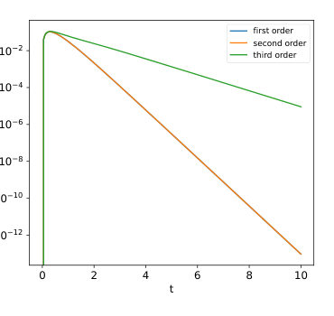
<figcaption class="paper-figure-caption"><b>Fig 2.</b> Figure 2. Semilogarithmic plot of the time evolution of p000(t) (left) and p0010(t) (right) for the first three approximation orders.</figcaption>
</figure>
<figure class="paper-figure-card">
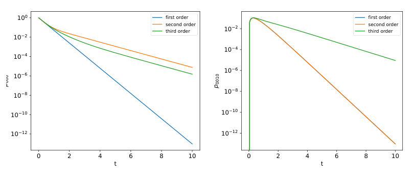
<figcaption class="paper-figure-caption"><b>Fig 3.</b> Figure 2 compares the first three approximation orders for the key quantities p000(t) and p0010(t). Relative to the first-order results, the third-order probabilities display significant long-time corrections, and both decay as e−t. (Note that the two first orders of p0010(t) are identical). Their convergence is expected to improve rapidly as probabilities associated with longer intervals are incorporated.</figcaption>
</figure>
<figure class="paper-figure-card">
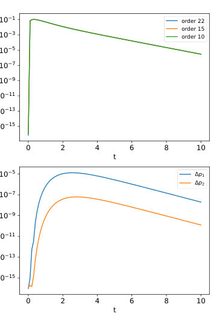
<figcaption class="paper-figure-caption"><b>Fig 4.</b> Figure 3. Semilogarithmic plot of the time evolution of p000(t) (top left) and p0010(t) (top right) for the 10, 15 and 22nd-order approximations. The absolute difference ∆p1 = |p(10) −p(15)| and ∆p2 = |p(15) −p(22)| shows the convergence of the method for p000 (bottom left) and p0010 (bottom right).</figcaption>
</figure>
<figure class="paper-figure-card">
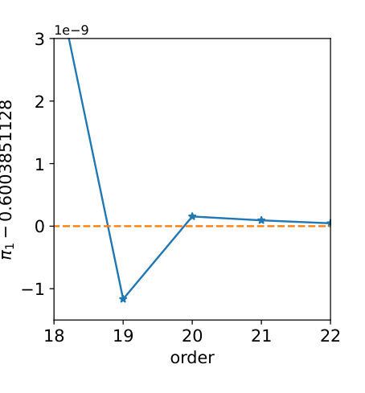
<figcaption class="paper-figure-caption"><b>Fig 5.</b> Figure 4. Convergence of the occupied-site density as a function of the approximation order.</figcaption>
</figure>
</div>

<p><strong>Summary.</strong> This paper tackles the complex kinetics of the 1D Riviera model by developing a powerful mathematical technique: solving an infinite hierarchy of kinetic equations through systematic, order-by-order truncation. The method successfully provides highly accurate analytical estimates for both the final jamming density and the full time evolution of site occupation probabilities.</p>
<p><strong>Why it may be interesting.</strong> While focused on classical statistical mechanics, the method of deriving an infinite hierarchy and using systematic closure schemes is mathematically analogous to techniques used in quantum field theory or open quantum system dynamics where exact solutions are intractable.</p>
<details>
<summary>Detailed structure</summary>
<p><strong>Main problem.</strong> The primary challenge is determining the exact kinetics of the one-dimensional Riviera model, which involves long-range dynamical correlations preventing a finite analytical solution.</p>
<p><strong>Main result.</strong> The authors developed a systematic closure scheme for an infinite hierarchy of kinetic equations, demonstrating that increasing the truncation order leads to rapid and highly accurate convergence toward the true physical behavior.</p>
<p><strong>Method.</strong> They derived an infinite hierarchy of coupled differential equations governing joint occupation probabilities and systematically truncated this hierarchy at arbitrary finite orders using mean-field approximations for long-range correlations.</p>
<p><strong>Model / system.</strong> The system is the one-dimensional Riviera model, a random sequential deposition process on a lattice where site occupancy depends on nearest-neighbor availability (i.e., isolated vacancies cannot be filled).</p>
<p><strong>Key observables.</strong> Occupation probabilities ($\pi_0, \pi_m, \pi_d, \pi_1$), the jamming density ($\pi_1(\infty)$), and the full time-dependent evolution of these densities.</p>
<p><strong>Important parameters / regimes.</strong> The truncation order ($l$) of the kinetic hierarchy; the final jamming density $\pi_1(\infty)$.</p>
<p><strong>Assumptions / limitations.</strong> The core approximation involves replacing higher-order joint probabilities with a specific mean-field exponential form, which allows for the solvability of the truncated linear system.</p>
<p><strong>Figures summary.</strong> Figures illustrate the convergence of key probabilities ($p_{000}(t)$, $p_{0010}(t)$) across different approximation orders (e.g., 10th vs. 22nd). Figure 5 shows the nonmonotonic time evolution of monomer and dimer densities.</p>
<p><strong>Paper structure.</strong> The paper builds by first establishing the infinite hierarchy, then systematically applying closures at increasing orders (first, second, up to twenty-second), presenting results for observables like jamming density convergence and full time-dependent analytical expressions derived from these truncated systems.</p>
</details>
<details>
<summary>Abstract</summary>
<p>The Riviera model is a random sequential deposition model for house building on a lattice, in which a house cannot be built when both nearest-neighbor sites are already occupied. In one dimension, an attempted deposition is therefore rejected whenever the target site is an isolated vacancy. Despite the apparent simplicity of this rule, no exact analytical solution of the original model is currently known. We derive an infinite hierarchy of kinetic equations governing its dynamics and introduce a systematic closure scheme that can be implemented at arbitrary finite order. Solving the resulting systems order by order, we show that the corresponding kinetics converges rapidly toward the exact behavior. At high order, the method yields an exceptionally accurate estimate of the jamming density while retaining explicit analytical expressions for the full time-dependent evolution.</p>
</details>
<p><sub><a href="#top">↑ back to top</a></sub></p>

<p><a id="paper-2607.27516"></a></p>
<h3 id="phase-transitions-and-microphases-in-elastomers-i-emergence-of-stable-domains"><a href="http://arxiv.org/abs/2607.27516v1">Phase transitions and microphases in elastomers. I. Emergence of stable domains</a></h3>
<p><strong>Authors:</strong> Manu Mannattil, Haim Diamant, David Andelman<br>
<strong>Type:</strong> theory · <strong>Category:</strong> statistical mechanics · <strong>PDF:</strong> <a href="https://arxiv.org/pdf/2607.27516v1">https://arxiv.org/pdf/2607.27516v1</a><br>
<strong>Analysis basis:</strong> full PDF text, analyzed in chunks
<strong>Topic relevance:</strong> <code>Keldysh / 2PI / non-Gaussian methods</code> <strong>3/5</strong> · <code>analog quantum simulation</code> <strong>2/5</strong> · <code>driven-dissipative phase transition</code> <strong>2/5</strong> · <code>methods for driven-dissipative</code> <strong>2/5</strong> · <code>non-equilibrium dynamics</code> <strong>2/5</strong> · <code>non-equilibrium universality</code> <strong>2/5</strong> · <code>Frenkel-Kontorova</code> <strong>1/5</strong> · <code>correlated / nonlocal dissipation</code> <strong>1/5</strong> · <code>correlated cavity matter</code> <strong>1/5</strong> · <code>entanglement &amp; information structure</code> <strong>1/5</strong></p>
<div class="figure-strip-hint">↔ Scroll figures horizontally</div>
<div class="paper-figures-scroll">
<figure class="paper-figure-card">
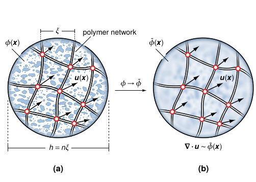
<figcaption class="paper-figure-caption"><b>Fig 1.</b> FIG. 1. (a) The volume fraction of a discrete polymer network, represented as a continuum field ϕ(x), exhibits a pro- nounced coarseness at intermolecular length scales. However, only those variations in ϕ that persist beyond a characteris- tic length scale h produce appreciable network deformations. We describe the deformations using a mesoscopic displace- ment field u(x). (b) To capture this separation of scales, ϕ is replaced with a further coarse-grained version ¯ϕ in the material-conservation relation, Eq. (8), that links u and ϕ. This associates u only with variations in ϕ on length scales larger than h. For isotropically swollen elastomers, we take h = nξ, where ξ is the end-to-end...</figcaption>
</figure>
<figure class="paper-figure-card">
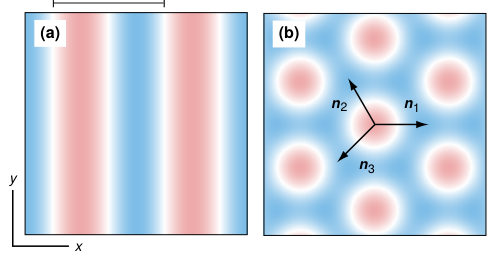
<figcaption class="paper-figure-caption"><b>Fig 2.</b> FIG. 2. Schematics of modulated phases showing (a) lamel- lae and (b) hexagonal phase, which also shows the unit-vector triad {nj}. At temperatures close to the critical temperature, the modulations are well approximated by sinusodial functions. In both panels, solvent rich (deficient) regions are shown in red (blue).</figcaption>
</figure>
<figure class="paper-figure-card">
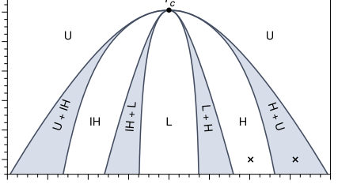
<figcaption class="paper-figure-caption"><b>Fig 3.</b> FIG. 3. Phase diagram in the polymer volume fraction– temperature plane (ϕ0, T), for an isotropically swollen elas- tomer with elastocapillary number [see Eq. (16)], γ0 = 4. For illustrative purposes, we set the critical parameters to (ϕc, Tc) = (0.2, 0). All other free-energy parameters are set to unity. Elastic effects shift the critical temperature to T ′ c = Tm(0) = −(1 + ln 4) ≈−2.386 [Eq. (18)] below which three phases appear: lamellar (L), hexagonal (H), and inverted hexagonal (IH). Only the uniform (U) phase appears above T ′ c. The phase coexistence regions separated by binodals (solid curves) are shaded in grey. The two crosses in the lower right corner indicate the (ϕ0, T) values...</figcaption>
</figure>
<figure class="paper-figure-card">
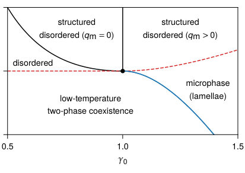
<figcaption class="paper-figure-caption"><b>Fig 4.</b> FIG. 4. Phase diagram in the (γ0, τ) plane for h = 1, where τ is the effective temperature defined in Eq. (33), and γ0 is the elastocapillary number, Eq. (16). Second-order phase transition boundaries are shown as dashed red curves and correspond to τ = (1−γ0)2/γ0 for γ0 &gt; 1, and to τ = 0 for γ0 &lt; 1. The solid blue curve, given by τ = −(2 + √</figcaption>
</figure>
<figure class="paper-figure-card">
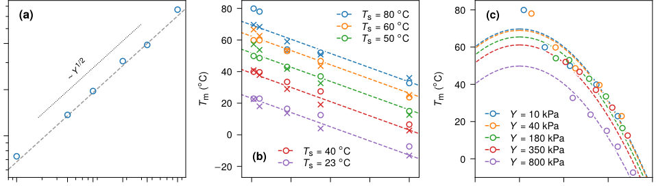
<figcaption class="paper-figure-caption"><b>Fig 5.</b> FIG. 5. (a) Scattering intensity peak qm as a function of the Young’s modulus Y (log-log plot). Experimental results from Ref. [14] are shown with circles. The dashed line is the theoretical prediction from Eq. (45), qm ∼Y 1/2. (b) Microphase separation temperature Tm as function of Y for elastomers with different initial swelling temperatures Ts, which determine the value of the polymer volume fraction ϕ0 at equilibrium. Experimental values are shown as circles, and theoretical estimates from Eq. (46) are shown as crosses. The dashed guidelines illustrate the linearity of Tm with Y . (c) Tm as a function of ϕ0 for different Y using Eq. (46) (dashed curves) and experimental results...</figcaption>
</figure>
</div>

<p><strong>Summary.</strong> This theoretical work models microphase separation in swollen elastomers by coupling thermodynamic fluctuations (Ginzburg-Landau) to elastic deformations. By deriving a nonlocal coupling from volume conservation, the authors show that elasticity dictates the morphology and transition temperature of these soft materials. This provides a generalized framework for understanding how mechanical constraints govern phase behavior.</p>
<p><strong>Why it may be interesting.</strong> While focused on condensed matter elasticity, the mathematical framework involving coupled order parameters ($\psi$) and strain fields ($u$), analyzed via fluctuation theory in Fourier space, shares structural similarities with many-body field theories used in AMO physics for studying phase transitions in interacting quantum systems.</p>
<details>
<summary>Detailed structure</summary>
<p><strong>Main problem.</strong> The paper investigates how elastic forces regulate phase separation, specifically microphase separation (EMPS), within swollen elastomer networks.</p>
<p><strong>Main result.</strong> The theory successfully reproduces the experimentally observed scaling of domain size and transition temperature with elastomer stiffness by incorporating a nonlocal coupling arising from volume conservation.</p>
<p><strong>Method.</strong> The analysis uses continuum elasticity theory combined with Ginzburg-Landau free energy functionals, analyzed via Fourier space methods to study fluctuations around equilibrium states.</p>
<p><strong>Model / system.</strong> The system is an isotropically swollen crosslinked polymer network (elastomer). The model Hamiltonian combines a Ginzburg-Landau term for phase separation and a linear elastic energy term based on strain fields.</p>
<p><strong>Key observables.</strong> Domain size, phase transition temperature ($T_m$), structure factor peak ($q_m$), and the dimensionless parameter $\gamma_0$.</p>
<p><strong>Important parameters / regimes.</strong> Elastomer stiffness (Young's modulus $Y$), characteristic length scales ($\xi$, domain size), and material constants ($a, b, \kappa$).</p>
<p><strong>Assumptions / limitations.</strong> The analysis assumes small fluctuations near the critical point and initially restricts itself to isotropic swelling; anisotropic effects are reserved for a companion paper.</p>
<p><strong>Figures summary.</strong> Figure 1 illustrates scale separation in volume fraction ($\phi(x)$), showing that only variations beyond a characteristic length $h$ cause significant network deformations captured by coarse-graining.</p>
<p><strong>Paper structure.</strong> The work is presented in two parts: Part I establishes the theory for isotropic swelling using nonlocal coupling derived from volume conservation. The companion paper (Part II) extends this analysis to include anisotropic swelling and inhomogeneous elastic moduli.</p>
</details>
<details>
<summary>Abstract</summary>
<p>Elasticity often plays a key role in regulating phase separation in physical systems. Recent experiments have shown that elastic effects can be used to control microphase separation in swollen elastomers. Here, microphase separation arises from a mismatch between the characteristic length scales of elastic and thermodynamic interactions. In this first part of a two-part paper, we show that microphase formation in elastomers can be explained using conventional theories of elasticity through a nonlocal thermodynamic-elastic coupling arising from volume conservation. Our theory reproduces the observed dependence of phase transition temperature and domain size on elastomer stiffness in isotropically swollen elastomers. In the companion paper, we investigate the effects of anisotropic swelling and inhomogeneous elastic moduli.</p>
</details>
<p><sub><a href="#top">↑ back to top</a></sub></p>

<p><a id="paper-2607.27718"></a></p>
<h3 id="quantum-coherence-and-entanglement-in-wireless-quantum-batteries"><a href="http://arxiv.org/abs/2607.27718v1">Quantum coherence and entanglement in wireless quantum batteries</a></h3>
<p><strong>Authors:</strong> Jun-Jie Jiang, Jin-Di Cao, Yu-Fei Zhang, Meng-Long Song, Dong Wang<br>
<strong>Type:</strong> theory · <strong>Category:</strong> statistical mechanics · <strong>PDF:</strong> <a href="https://arxiv.org/pdf/2607.27718v1">https://arxiv.org/pdf/2607.27718v1</a><br>
<strong>Analysis basis:</strong> full PDF text, analyzed in chunks
<strong>Topic relevance:</strong> <code>correlated / nonlocal dissipation</code> <strong>3/5</strong> · <code>entanglement &amp; information structure</code> <strong>3/5</strong> · <code>methods for driven-dissipative</code> <strong>3/5</strong> · <code>driven-dissipative phase transition</code> <strong>2/5</strong> · <code>non-equilibrium dynamics</code> <strong>2/5</strong> · <code>Keldysh / 2PI / non-Gaussian methods</code> <strong>1/5</strong> · <code>Tavis-Cummings &amp; cavity-many-emitter</code> <strong>1/5</strong> · <code>correlated cavity matter</code> <strong>1/5</strong> · <code>non-equilibrium universality</code> <strong>1/5</strong></p>
<div class="figure-strip-hint">↔ Scroll figures horizontally</div>
<div class="paper-figures-scroll">
<figure class="paper-figure-card">
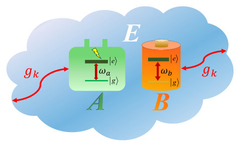
<figcaption class="paper-figure-caption"><b>Fig 1.</b> FIG. 1. Schematic illustration of the wireless quantum charging model. The system consists of two two-level systems: a quantum charger A (green sphere) and a quantum battery B (orange sphere), characterized by their transition frequencies ωa and ωb, respectively. We consider the resonant condition where ωa = ωb = ω0. They are spatially separated and embedded within a common dissipative envi- ronment E (blue region). The red arrows indicate the interaction with the environmental field modes, characterized by the mode-dependent coupling strength gk, which is further scaled by the dimensionless weights µ1 (charger) and µ2 (battery). Crucially, there is no direct coupling between A and B; the...</figcaption>
</figure>
<figure class="paper-figure-card">
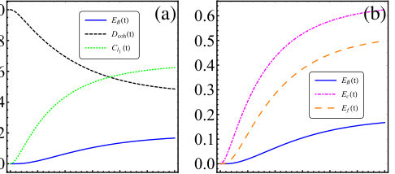
<figcaption class="paper-figure-caption"><b>Fig 2.</b> FIG. 2. (Color online) Dynamics of quantum resources and energy storage in the Markovian weak-coupling regime (R = 0.3λ). (a) Evolution of coherence: First-order coherence Dcoh (black dashed curve) decays monotonically, while l1-norm coherence Cl1 (green dotted curve) is reconstructed. (b) Evolution of entanglement and energy: Concurrence EC (pink dot-dashed curve) and Entanglement of Formation Ef (orange long-dashed curve) precede the accumu- lation of battery energy EB (blue solid curve). The parameters are set to ξ1 = 0.5 (charger coupling), ξ2 = √</figcaption>
</figure>
<figure class="paper-figure-card">
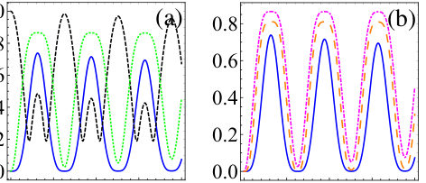
<figcaption class="paper-figure-caption"><b>Fig 3.</b> FIG. 3. (Color online) Dynamics in the Non-Markovian strong- coupling regime (R = 100λ). (a) Coherence protection: Both first-order coherence Dcoh (black dashed curve) and l1-norm co- herence Cl1 (green dotted curve) exhibit persistent periodic oscil- lations, avoiding monotonic decay. (b) Resource-energy synchro- nization: Concurrence EC (pink dot-dashed curve), Entanglement of Formation Ef (orange long-dashed curve), and battery energy EB (blue solid curve) oscillate in perfect phase. The parameters are ξ1 = 0.5, ξ2 = √</figcaption>
</figure>
<figure class="paper-figure-card">
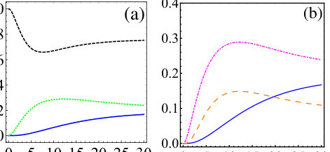
<figcaption class="paper-figure-caption"><b>Fig 4.</b> FIG. 4. (Color online) Dynamics in the Markovian regime with charger-preferred coupling (R = 0.3λ). (a) Accelerated deco- herence: First-order coherence Dcoh (black dashed curve) decays rapidly, and the reconstruction of Cl1 (green dotted curve) is sup- pressed compared to Fig. 2. (b) Energy suppression: Entanglement (pink dot-dashed curve/orange long-dashed curve) is transient, and the battery energy EB (blue solid curve) is almost negligible. The pa- rameters are ξ1 = √</figcaption>
</figure>
<figure class="paper-figure-card">
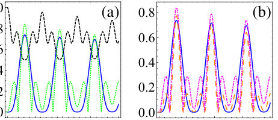
<figcaption class="paper-figure-caption"><b>Fig 5.</b> FIG. 5. (Color online) Dynamics in the Non-Markovian regime with charger-preferred coupling (R = 100λ). (a) Revival of co- herence: Unlike the rapid decay in Fig. 4, memory effects induce sustained oscillations in Dcoh (black dashed curve) and Cl1 (green dotted curve). (b) Suboptimal energy recovery: Battery energy EB (blue solid curve) and entanglement (pink dot-dashed curve/orange long-dashed curve) are partially restored by backflow but remain lower than in the battery-preferred case (Fig. 3). The parameters are ξ1 = √</figcaption>
</figure>
</div>

<p><strong>Summary.</strong> This paper develops a theoretical framework for understanding wireless quantum batteries using resource theory. It shows that the environment's memory effects (non-Markovianity) and the symmetry of coupling are crucial control parameters governing energy transfer. The key finding is the distinction between coherence types: one acts as an activation threshold, while another serves as the continuous fuel source for extracting usable work.</p>
<p><strong>Why it may be interesting.</strong> This work bridges quantum thermodynamics and open quantum systems by providing quantitative resource metrics (coherence) that dictate operational limits for energy storage devices, which is highly relevant to quantum information engineering applications.</p>
<details>
<summary>Detailed structure</summary>
<p><strong>Main problem.</strong> The study investigates how quantum coherence and entanglement govern the charging dynamics and thermodynamic performance of a wireless quantum battery system.</p>
<p><strong>Main result.</strong> The paper establishes that first-order coherence sets an activation threshold for incoherent work, while $l_1$-norm coherence acts as the explicit fuel for coherent work extraction. Furthermore, environmental coupling symmetry dictates whether energy is trapped in a decoherence-free subspace or optimized for transfer.</p>
<p><strong>Method.</strong> A unified resource-theoretic analysis is employed to track quantum resources (coherence, entanglement) across different environmental regimes and coupling symmetries.</p>
<p><strong>Model / system.</strong> The model consists of two coupled two-level systems (a charger A and a battery B) interacting with a common structured bosonic environment E. The system dynamics are analyzed using the total Hamiltonian and restricted to the single-excitation subspace.</p>
<p><strong>Key observables.</strong> Quantum coherence ($l_1$-norm, first-order), entanglement (Concurrence, Entanglement of Formation), stored energy, and ergotropy (extractable work).</p>
<p><strong>Important parameters / regimes.</strong> Coupling strengths ($\mu_1, \mu_2$), environmental spectral density parameters ($\lambda$), and the regime classification (Markovian weak-coupling vs. Non-Markovian strong-coupling).</p>
<p><strong>Assumptions / limitations.</strong> The analysis is restricted to the single-excitation subspace, and the environment is modeled by a structured bosonic bath with a Lorentzian spectral density.</p>
<p><strong>Figures summary.</strong> Figures illustrate the time evolution of coherence and energy in both Markovian (weak coupling) and Non-Markovian (strong coupling) regimes, showing resource reconstruction and sustained oscillations. Later figures map out the relationship between coherence resources and extractable work.</p>
<p><strong>Paper structure.</strong> The paper progresses from defining the physical model and Hamiltonian to analyzing dynamics in specific environmental limits (Markovian vs. Non-Markovian). It then develops a thermodynamic framework linking coherence measures ($D_{coh}$ vs $C_{l1}$) to different types of extractable work, concluding with an analysis of how coupling symmetry controls the final energy storage state.</p>
</details>
<details>
<summary>Abstract</summary>
<p>We investigate the charging dynamics and thermodynamic performance of a wireless quantum battery system mediated by a common structured bosonic environment. By employing a unified resource-theoretic analysis, we elucidate the distinct roles of non-Markovian memory effects and coupling symmetry in regulating energy transfer. In the Markovian weak-coupling regime, we identify a transformative mechanism where the dynamic reconstruction of $l_1$-norm coherence compensates for the monotonic decay of first-order coherence to sustain energy transport. Conversely, the non-Markovian strong-coupling regime facilitates a cooperative resonance, characterized by the synchronized oscillation of entanglement and stored energy induced by environmental backflow. Furthermore, we reveal that coupling symmetry acts as a critical control parameter: while asymmetric coupling favoring the battery optimizes energy gain in memoryless environments, symmetric coupling under strong interactions unlocks a dark-state protection mechanism, effectively trapping energy within a decoherence-free subspace. Finally, a thermodynamic analysis based on ergotropy demonstrates that first-order coherence establishes the activation threshold for incoherent work, whereas $l_1$-norm coherence serves as the explicit fuel for coherent work extraction. These findings provide a refined theoretical framework for engineering environment-assisted quantum energy storage devices.</p>
</details>
<p><sub><a href="#top">↑ back to top</a></sub></p>

<p><a id="paper-2607.27945"></a></p>
<h3 id="complementary-matrix-gated-qkan-fast-weight-programmers-for-quantum-dynamics-forecasting"><a href="http://arxiv.org/abs/2607.27945v1">Complementary Matrix-Gated QKAN Fast-Weight Programmers for Quantum Dynamics Forecasting</a></h3>
<p><strong>Authors:</strong> Kuo-Chung Peng, Samuel Yen-Chi Chen, Jiun-Cheng Jiang, Chen-Yu Liu, En-Jui Kuo, Yun-Yuan Wang, Tzung-Chi Huang, Prayag Tiwari, Chi-Sheng Chen, Chun-Hua Lin, Yu-Chao Hsu, Tai-Yue Li, Saif Al-Kuwari, Simon See, Kuan-Cheng Chen, Nan-Yow Chen, Hsi-Sheng Goan<br>
<strong>Type:</strong> theory · <strong>Category:</strong> disordered systems and neural networks · <strong>PDF:</strong> <a href="https://arxiv.org/pdf/2607.27945v1">https://arxiv.org/pdf/2607.27945v1</a><br>
<strong>Analysis basis:</strong> full PDF text, analyzed in chunks
<strong>Topic relevance:</strong> <code>analog quantum simulation</code> <strong>3/5</strong> · <code>methods for driven-dissipative</code> <strong>3/5</strong> · <code>Tavis-Cummings &amp; cavity-many-emitter</code> <strong>2/5</strong> · <code>correlated cavity matter</code> <strong>2/5</strong> · <code>non-equilibrium dynamics</code> <strong>2/5</strong> · <code>Keldysh / 2PI / non-Gaussian methods</code> <strong>1/5</strong> · <code>correlated / nonlocal dissipation</code> <strong>1/5</strong> · <code>driven-dissipative phase transition</code> <strong>1/5</strong> · <code>entanglement &amp; information structure</code> <strong>1/5</strong></p>
<div class="figure-strip-hint">↔ Scroll figures horizontally</div>
<div class="paper-figures-scroll">
<figure class="paper-figure-card">
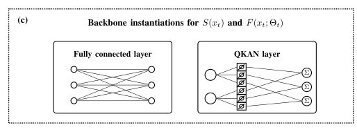
<figcaption class="paper-figure-caption"><b>Fig 1.</b> Fig. 1. Self-modulating update rules and programmer backbones. (a) Full self-modulation uses separate old- and new-modulation heads. (b) CMG uses a single low-rank-generated matrix gate with complementary weights for the retained and proposed states. (c) The slow and fast programmers may use classical fully connected modules or QKAN-based HQKAN modules. Solid arrows show data/output flow. Dashed arrows show generated fast-parameter flow. slow programmer of the gated baseline [14] also produces gt = σ(Sg ψ(xt)), gt ∈[0, 1], and updates</figcaption>
</figure>
<figure class="paper-figure-card">
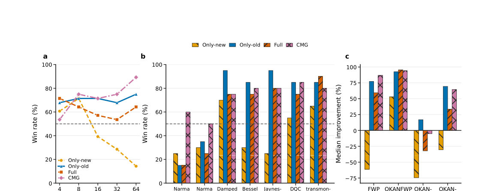
<figcaption class="paper-figure-caption"><b>Fig 2.</b> Fig. 2. Performance of the self-modulating update rules relative to their paired gated baselines. (a) Win rate by sequence length, aggregated across datasets and model families. (b) Win rate by dataset, aggregated across sequence lengths and model families. (c) Median relative MSE improvement [ Eq. (3)] by model family, aggregated across datasets and sequence lengths. Dashed lines in (a) and (b) mark a 50% win rate; the horizontal line in (c) marks zero improvement.</figcaption>
</figure>
<figure class="paper-figure-card">
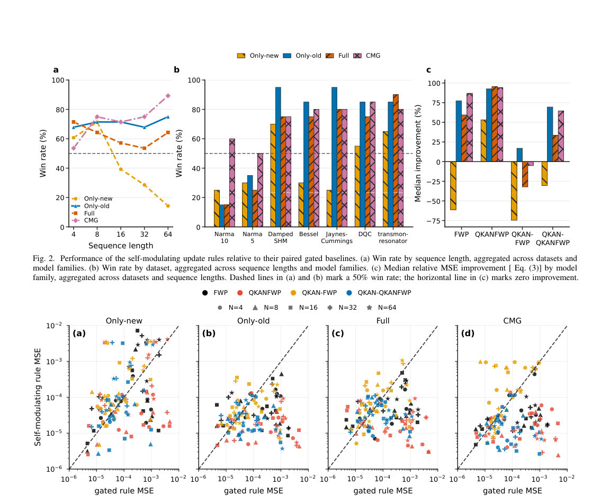
<figcaption class="paper-figure-caption"><b>Fig 3.</b> Fig. 3. Final test MSE of each self-modulating rule versus its paired gated baseline across all datasets, sequence lengths, and model families: (a) Only-new, (b) Only-old, (c) Full, and (d) CMG. The diagonal indicates equal MSE; points below it favor self-modulation. Colors denote model families, and markers denote sequence lengths.</figcaption>
</figure>
<figure class="paper-figure-card">
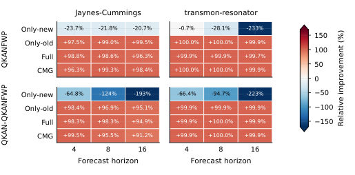
<figcaption class="paper-figure-caption"><b>Fig 4.</b> Fig. 6. Relative MSE improvement over the paired gated baseline [ Eq. (3)] for direct multi-step forecasting at N = 64. Rows group update rules within QKANFWP and QKAN-QKANFWP; columns group forecast horizons within the Jaynes–Cummings and transmon–resonator datasets. Values are computed from mean MSE over five seeds. Red denotes improvement, whereas blue denotes degradation.</figcaption>
</figure>
<figure class="paper-figure-card">
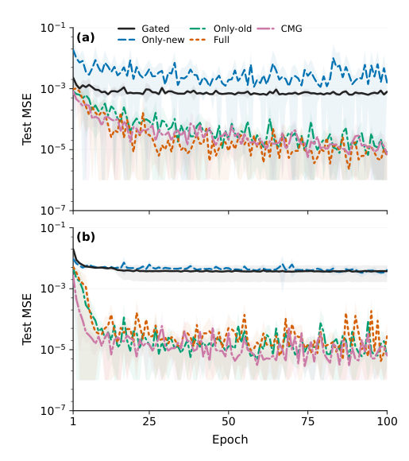
<figcaption class="paper-figure-caption"><b>Fig 5.</b> Fig. 4. Test MSE versus training epoch for QKANFWP at N = 64: (a) Jaynes–Cummings and (b) transmon–resonator. Curves show the mean over five seeds, and shaded bands show ±1 standard deviation.</figcaption>
</figure>
</div>

<p><strong>Summary.</strong> This paper introduces Complementary Matrix Gating (CMG) to enhance Fast-Weight Programmers (FWPs) used for forecasting quantum dynamics. CMG allows for superior, coordinate-wise control over memory retention versus new information writing. The method achieves state-of-the-art accuracy in simulating complex quantum systems like cavity QED models over long time horizons.</p>
<p><strong>Why it may be interesting.</strong> This work directly addresses the intersection of advanced deep learning architectures (QKANs, FWPs) with complex physical simulations (quantum dynamics), providing a state-of-the-art ML tool for modeling open quantum systems time evolution.</p>
<details>
<summary>Detailed structure</summary>
<p><strong>Main problem.</strong> The primary challenge is mitigating the computational cost of long context sequence learning in quantum dynamics forecasting models, which typically requires expensive sequential backpropagation through time.</p>
<p><strong>Main result.</strong> Complementary Matrix Gating (CMG) significantly outperforms scalar gating rules, achieving substantial improvements (e.g., &gt;91% improvement) in multi-step forecasting accuracy for quantum systems like Jaynes-Cummings and transmon resonators.</p>
<p><strong>Method.</strong> The authors introduce Self-Modulating QKAN-based Fast-Weight Programmers (FWPs), utilizing CMG to implement coordinate-wise memory control by combining the old state with a new proposal using complementary sigmoid gates.</p>
<p><strong>Model / system.</strong> The models are applied to forecast quantum dynamics, specifically simulating Jaynes-Cummings and transmon-resonator systems. The underlying mathematical framework involves time evolution governed by Hamiltonians or master equations.</p>
<p><strong>Key observables.</strong> Mean Squared Error (MSE) for single-step and multi-step forecasting; Relative MSE improvement (%) compared to baseline gating methods.</p>
<p><strong>Important parameters / regimes.</strong> Forecasting horizons ($H=4, 8, 16$ steps); Sequence lengths ($N=4, 8, 32, 64$).</p>
<p><strong>Assumptions / limitations.</strong> The core assumption is that coordinate-wise complementary modulation provides a stable and effective update mechanism for QKAN-based FWPs while preserving desirable mathematical structures (bounded convex updates).</p>
<p><strong>Figures summary.</strong> Figures illustrate the comparison of various self-modulating rules against gated baselines, showing CMG's superior performance in both single-step and multi-step forecasting across different quantum datasets.</p>
<p><strong>Paper structure.</strong> The paper first identifies the memory bottleneck in QKAN-FWPs. It then proposes Self-Modulating QKAN-based FWPs incorporating Complementary Matrix Gating (CMG). The methodology is validated by comparing CMG against other update rules across seven single-step benchmarks and through direct multi-step forecasting of quantum systems.</p>
</details>
<details>
<summary>Abstract</summary>
<p>Sequence models must decide what to write into memory and what to retain. In quantum and quantum-inspired sequence learning, nonlinear recurrent updates often require repeated circuit evaluations and sequential backpropagation through time, making long contexts costly. Gated fast-weight programmers (FWPs) based on quantum-inspired Kolmogorov-Arnold networks (QKANs) alleviate this bottleneck by storing context in time-varying fast parameters. However, their scalar gate applies one retention-write balance to every fast-state coordinate, forcing all parameters to share a memory timescale. We introduce Self-Modulating QKAN-based FWPs, which replace this broadcast gate with low-rank-generated element-wise modulation of the new-proposal branch, a bounded old-state branch, or both. We further propose Complementary Matrix Gating (CMG), which uses one sigmoid matrix gate to retain the old state and its complement to write the new proposal. CMG provides coordinate-wise memory control while preserving the bounded convex update and affine prefix-scan structure of scalar gating, at the modulation-head cost of a single-branch rule. We compare four self-modulating rules with scalar gating across four FWP architectures combining classical and QKAN-based slow and fast programmers. Across seven single-step forecasting benchmarks and five sequence lengths, CMG gives the most consistent improvements for architectures whose fast programmer incorporates a QKAN-based module. In direct multi-step forecasting of Jaynes-Cummings and transmon-resonator dynamics simulated with CUDA-Q Dynamics, CMG models maintain mean-squared errors on the order of 0.001 or lower across forecasting horizons of 4, 8, and 16 steps, while improving on their scalar-gated counterparts by at least 91.2%. These results establish coordinate-wise complementary modulation as a stable and effective update for QKAN-based FWPs.</p>
</details>
<p><sub><a href="#top">↑ back to top</a></sub></p>

<p><a id="paper-2607.27341"></a></p>
<h3 id="quantum-vs-classical-erasure-equal-bounds-but-unequal-costs"><a href="http://arxiv.org/abs/2607.27341v1">Quantum vs Classical Erasure: Equal Bounds but Unequal Costs</a></h3>
<p><strong>Authors:</strong> Jan Neuser, Jake Xuereb, Pharnam Bakhshinezhad, Marcus Huber<br>
<strong>Type:</strong> theory · <strong>Category:</strong> statistical mechanics · <strong>PDF:</strong> <a href="https://arxiv.org/pdf/2607.27341v1">https://arxiv.org/pdf/2607.27341v1</a><br>
<strong>Analysis basis:</strong> full PDF text, analyzed in chunks
<strong>Topic relevance:</strong> <code>correlated / nonlocal dissipation</code> <strong>3/5</strong> · <code>methods for driven-dissipative</code> <strong>3/5</strong> · <code>driven-dissipative phase transition</code> <strong>2/5</strong> · <code>entanglement &amp; information structure</code> <strong>2/5</strong> · <code>non-equilibrium universality</code> <strong>2/5</strong> · <code>Keldysh / 2PI / non-Gaussian methods</code> <strong>1/5</strong> · <code>Kondo &amp; dissipative impurity</code> <strong>1/5</strong> · <code>analog quantum simulation</code> <strong>1/5</strong> · <code>non-equilibrium dynamics</code> <strong>1/5</strong></p>
<div class="figure-strip-hint">↔ Scroll figures horizontally</div>
<div class="paper-figures-scroll">
<figure class="paper-figure-card">
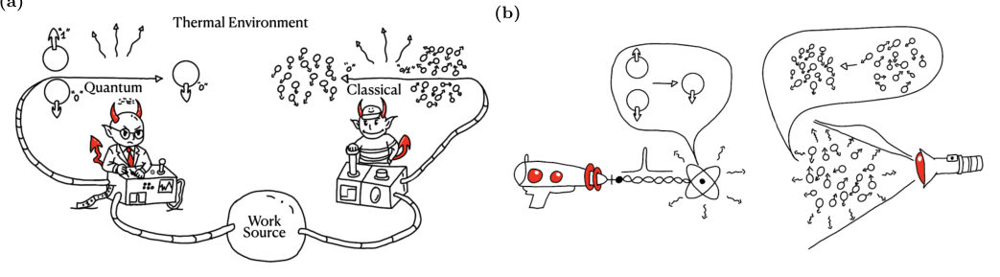
<figcaption class="paper-figure-caption"><b>Fig 1.</b> FIG. 1. (a) General setup we consider: the systems are embedded in a thermal environment, both the classical and quantum control use a work source to perform the respective erasure protocol. (b) Even though they use the same resources the control requirements differ: the quantum bit requires a sharp control frequency, while the classical bit allows for a wider spectrum.</figcaption>
</figure>
<figure class="paper-figure-card">
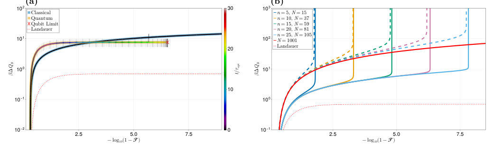
<figcaption class="paper-figure-caption"><b>Fig 2.</b> FIG. 2. (a) Dissipation as a function of the erasure fidelity, plotted against the logarithmic distance from perfect erasure, −log10(1 −F). We show both quantum (orange) and classical (blue) protocols, where the classical bit consists of N = 1011 + 1 qubits. The red cross indicates the infinite-time limit of the quantum case. The color gradient indicates the elapsed protocol time in units of τopt = π/(2g), further the time between vertical black lines is fixed to τopt/8. The temporal spacing between the bins, crossing the dissipation fidelity curves, is fixed. (b) Dissipation as a function of the fidelity on a scale of −log10(1 −F). We display a quantum erasure with different amount of...</figcaption>
</figure>
</div>

<p><strong>Summary.</strong> This work rigorously compares the minimum energy dissipation required to erase bits of information from quantum versus classical physical systems. It proves that while the ultimate theoretical bound is the same, practical constraints reveal significant thermodynamic advantages for classical encoding schemes. The findings help explain why real-world erasure protocols fall short of ideal bounds.</p>
<p><strong>Why it may be interesting.</strong> It provides quantitative thermodynamic comparisons between quantum and classical information processing limits, which is highly relevant to understanding the fundamental resource costs in open quantum systems.</p>
<details>
<summary>Detailed structure</summary>
<p><strong>Main problem.</strong> The paper compares the thermodynamic cost (dissipation) required for erasing information encoded in quantum versus classical systems when operating with finite resources.</p>
<p><strong>Main result.</strong> While ideal erasure costs are equal, practical implementation shows that classical protocols can achieve comparable erasure quality under significantly weaker operational constraints than quantum ones.</p>
<p><strong>Method.</strong> The analysis uses first principles thermodynamics, comparing dissipation ($\Delta Q$) derived from the Clausius inequality across various idealized and finite-resource limits for both system types.</p>
<p><strong>Model / system.</strong> Quantum bits are modeled as two-level systems coupled to a thermal bath and work source. Classical bits are encoded in many-body systems or ladder structures, allowing for comparison of their respective erasure protocols.</p>
<p><strong>Key observables.</strong> Dissipated heat ($\Delta Q$), Fidelity ($F$), Entropy changes ($\Delta S$), and the Landauer bound.</p>
<p><strong>Important parameters / regimes.</strong> Finite resources, energy gaps, operation times, and the degree of information erasure ($\epsilon$).</p>
<p><strong>Assumptions / limitations.</strong> The analysis relies on idealized asymptotic limits (infinite steps) and specific Hamiltonian interaction forms for both quantum and classical couplings.</p>
<p><strong>Figures summary.</strong> Figures compare dissipation vs. fidelity/error probability curves for quantum and classical protocols, illustrating the trade-offs in resource requirements.</p>
<p><strong>Paper structure.</strong> The paper establishes the Landauer bound, develops a unified framework for finite-resource erasure cost comparison using energy conservation constraints, derives specific bounds for both systems, and analyzes performance under realistic limitations like imperfect timing.</p>
</details>
<details>
<summary>Abstract</summary>
<p>Irreversibility has a fundamental thermodynamic cost, erasing information inevitably generates heat. This connection is quantified by the Landauer bound, which gives the minimum dissipation needed to erase a single bit of information. While this bound applies in both classical and quantum settings, it is saturated only in idealised limits of infinite resources. Here, we provide a unified first principles description of finite-resource erasure in both classical and quantum systems. We begin by proving the communal folklore that in the idealised regime the erasure cost of a bit encoded in a quantum or classical system is the same. Despite this, we show that their practical implementation differs substantially: achieving comparable erasure quality in quantum systems requires more control, larger accessible energy gaps and longer operation times. Classical protocols can achieve the erasure of a comparable quantum protocol under far weaker constraints which we expose in trade-off relations. Our results explain why practical erasure schemes fall short of Landauer's bound and show that classical systems enjoy several fundamental thermodynamic advantages.</p>
</details>
<p><sub><a href="#top">↑ back to top</a></sub></p>

<p><a id="paper-2607.27321"></a></p>
<h3 id="spin-incoherent-mott-thouless-pumps"><a href="http://arxiv.org/abs/2607.27321v1">Spin-incoherent Mott-Thouless pumps</a></h3>
<p><strong>Authors:</strong> Ajesh Kumar, Urban F. P. Seifert, Erez Berg, Achim Rosch<br>
<strong>Type:</strong> theory · <strong>Category:</strong> strongly correlated electrons · <strong>PDF:</strong> <a href="https://arxiv.org/pdf/2607.27321v1">https://arxiv.org/pdf/2607.27321v1</a><br>
<strong>Analysis basis:</strong> full PDF text, analyzed in chunks
<strong>Topic relevance:</strong> <code>analog quantum simulation</code> <strong>3/5</strong> · <code>Keldysh / 2PI / non-Gaussian methods</code> <strong>2/5</strong> · <code>methods for driven-dissipative</code> <strong>2/5</strong> · <code>non-equilibrium dynamics</code> <strong>2/5</strong> · <code>correlated / nonlocal dissipation</code> <strong>1/5</strong> · <code>correlated cavity matter</code> <strong>1/5</strong> · <code>driven-dissipative phase transition</code> <strong>1/5</strong> · <code>entanglement &amp; information structure</code> <strong>1/5</strong> · <code>exotic spin models in light-matter</code> <strong>1/5</strong> · <code>non-equilibrium universality</code> <strong>1/5</strong></p>
<div class="figure-strip-hint">↔ Scroll figures horizontally</div>
<div class="paper-figures-scroll">
<figure class="paper-figure-card">
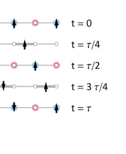
<figcaption class="paper-figure-caption"><b>Fig 1.</b> Figure 1: Schematic illustration of a quarter-filled Mott-Thouless pump described by HRM, Eq. (1), with one fermion per two-site unit cell. Pumping is driven by a staggered potential (red and blue circles) and a staggered hopping amplitude (thick and thin gray bonds). During one pumping cycle, a unit charge is trans- ported by one unit cell, ∆x = 2a0. In the limit of strong repulsive interactions, the charge dynamics effectively decouples from the spin dynamics, so that quan- tized charge transport remains robust even in highly spin-incoherent states with large spin entropies.</figcaption>
</figure>
<figure class="paper-figure-card">
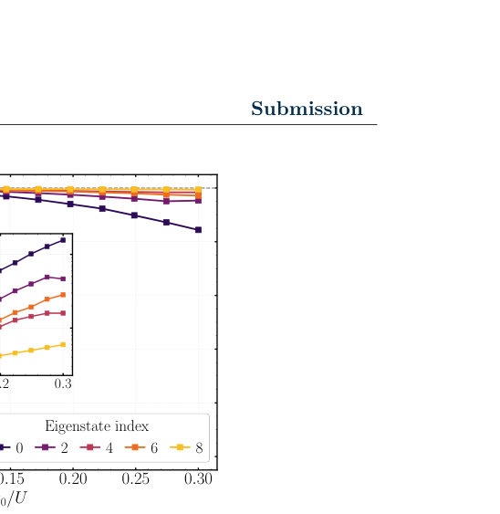
<figcaption class="paper-figure-caption"><b>Fig 2.</b> Figure 2: Pumped charge per cycle as a function of t0/U for the quarter-filled Mott-Thouless pump described by Eq. (1). We show the time evolution for four low-energy initial states in the zero-momentum sector describing spin excitations. The curves are labeled by the energy-ordering index of the initial state, in as- cending order. Parameters: system size L = 16, particle numbers N↑= N↓= 4, δt = 0.5, δv = 1, and driving frequency ω = 0.1. Each initial state is evolved for five driving periods, and the transported charge is averaged over these cycles. The inset shows the deviation from perfect quantization on a logarithmic scale. In the U →∞limit, the curves are expected to approach the...</figcaption>
</figure>
<figure class="paper-figure-card">
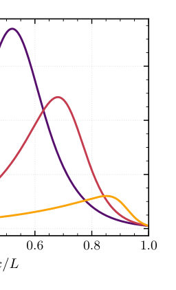
<figcaption class="paper-figure-caption"><b>Fig 3.</b> Figure 4: Steady-state temperature profile obtained from the solution of the drift- diffusion equation (Eq. 24) for different values of the dimensionless parameter v/(γhL0). The asymmetric profile arises as our system effectively pumps charge, spin and heat from left to right with the velocity v. Here, we use L = 10L0.</figcaption>
</figure>
<figure class="paper-figure-card">
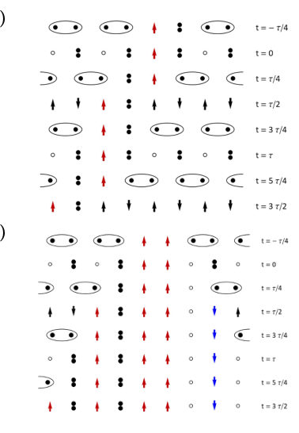
<figcaption class="paper-figure-caption"><b>Fig 4.</b> Figure 6: Operation and defect propagation in the Mott-Thouless pump at half filling. (a) Result of a calculation within the simplified model Hs, where hopping acts only on even (odd) sites for 0 &lt; t &lt; τ/2 (τ/2 &lt; t &lt; τ) for a semi-infinite chain with open boundary conditions on the right. Filled dots, circles and arrows denote charges, singlet states and localized spins, respectively. The red and blue horizontal arrow denotes the transport of charge and spin, respectively. For the chosen staggered magnetic field the transported fermion carries spin-up only. Charge and spin accumulate at the right boundary. (b) Propagation of low-energy defects within model Hs: An added spin-↑fermion moves...</figcaption>
</figure>
<figure class="paper-figure-card">

<figcaption class="paper-figure-caption"><b>Fig 5.</b> Figure 7: Spin exchange coefficients as a function of time t and rescaled time ˜t. Parameters used: t0 = 1, δt = 0.3, v0 = 4, and system size L = 6 with N = 3 particles.</figcaption>
</figure>
</div>

<p><strong>Summary.</strong> This paper analyzes Mott-Thouless pumps, extending the concept of quantized charge transport to highly entropic, spin-incoherent Mott states. The authors demonstrate that robust quantization is possible if the pumped charge sector remains decoupled from hot spin excitations. This work provides crucial theoretical understanding regarding the limits of topological protection in strongly correlated materials under time-periodic driving.</p>
<p><strong>Why it may be interesting.</strong> This work bridges topological physics (quantized pumping) with strongly correlated electron physics (Mott insulators), providing insights into how quantum coherence can be maintained in highly dissipative or thermally excited many-body systems.</p>
<details>
<summary>Detailed structure</summary>
<p><strong>Main problem.</strong> The study investigates the dynamical robustness of quantized charge transport (Thouless pumping) when the system is initialized in highly entropic, spin-incoherent Mott states.</p>
<p><strong>Main result.</strong> Quantized Thouless pumping can remain exponentially protected even in high-entropy Mott states due to dynamic decoupling from hot spin degrees of freedom. Conversely, other pump classes fail because spin excitations generate charge excitations.</p>
<p><strong>Method.</strong> The authors use analytical derivations, including mapping to spinless fermions and applying perturbation theory (Schrieffer-Wolff expansion) to derive effective low-energy Hamiltonians.</p>
<p><strong>Model / system.</strong> The system is based on the interacting Rice-Mele model Hamiltonian, analyzed in regimes ranging from non-interacting ($U=0$) to strongly correlated Mott insulators ($U=\infty$).</p>
<p><strong>Key observables.</strong> Quantized charge transport per cycle (Delta Q), entropy, and heating rate of spin excitations.</p>
<p><strong>Important parameters / regimes.</strong> Interaction strength U, driving frequency $\omega$, filling fraction (quarter-filling vs. half-filling).</p>
<p><strong>Assumptions / limitations.</strong> The analysis assumes adiabatic driving with respect to the charge gap but explores regimes where spin dynamics are highly excited and incoherent.</p>
<p><strong>Figures summary.</strong> Figures illustrate robust quantized transport at quarter-filling for large U, contrasting this with failure at half-filling due to spin gap closing. They also show time evolution of pumped charge under various protocols.</p>
<p><strong>Paper structure.</strong> The paper progresses by first establishing the standard Thouless pump, then introducing Mott-Thouless pumps in high-entropy regimes. It analytically proves protection mechanisms and contrasts these with failure modes caused by spin-charge coupling, supported by numerical simulations.</p>
</details>
<details>
<summary>Abstract</summary>
<p>A Thouless pump describes a system in which a quantized amount of charge is transported by one lattice spacing per cycle when the parameters of a Hamiltonian are varied slowly and periodically. In the standard case, this quantization requires the system to remain in its ground state with vanishing thermodynamic entropy throughout the pumping process. Here, we introduce a class of Mott-Thouless pumps, which operate in highly entropic, spin-incoherent Mott states. We show analytically that these states exhibit exponentially protected quantized transport despite their extensive entropy, because the pumped charge resides in a gapped sector that remains dynamically decoupled from the hot spin degrees of freedom. By contrast, motivated by a recent experimental realization, we identify other classes of Mott-Thouless pumps that lack this protection. In these systems, spin excitations can efficiently generate charge excitations, leading to a rapid breakdown of quantized transport. Our analytical results are supported by numerically exact real-time simulations of finite systems.</p>
</details>
<p><sub><a href="#top">↑ back to top</a></sub></p>

<p><a id="paper-2607.28275"></a></p>
<h3 id="synchronization-kinematic-waves-and-spike-phase-separation-in-feedback-ising-neural-networks-on-heterogeneous-graphs"><a href="http://arxiv.org/abs/2607.28275v1">Synchronization, Kinematic Waves and Spike-Phase-Separation in Feedback Ising Neural Networks on Heterogeneous Graphs</a></h3>
<p><strong>Authors:</strong> Anna Poggialini, Irem Topal, Fabrizio Lombardi, Daniele De Martino<br>
<strong>Type:</strong> theory · <strong>Category:</strong> statistical mechanics · <strong>PDF:</strong> <a href="https://arxiv.org/pdf/2607.28275v1">https://arxiv.org/pdf/2607.28275v1</a><br>
<strong>Analysis basis:</strong> full PDF text, analyzed in chunks
<strong>Topic relevance:</strong> <code>driven-dissipative phase transition</code> <strong>3/5</strong> · <code>methods for driven-dissipative</code> <strong>3/5</strong> · <code>non-equilibrium universality</code> <strong>3/5</strong> · <code>non-equilibrium dynamics</code> <strong>2/5</strong> · <code>Frenkel-Kontorova</code> <strong>1/5</strong> · <code>Keldysh / 2PI / non-Gaussian methods</code> <strong>1/5</strong> · <code>analog quantum simulation</code> <strong>1/5</strong> · <code>correlated / nonlocal dissipation</code> <strong>1/5</strong></p>
<div class="figure-strip-hint">↔ Scroll figures horizontally</div>
<div class="paper-figures-scroll">
<figure class="paper-figure-card">

<figcaption class="paper-figure-caption"><b>Fig 1.</b> Figure 1: Feedback Ising model on a heterogeneous network. A. Microscopic spin configurations (si = +1 in blue, si = −1 in red) at four representative times along the limit cycle. B. Time series of the global magnetization m(t) and the feedback field h(t), showing nonlinear self-sustained oscillations. Dashed lines mark the snapshots of panel A. C. Degree-resolved magnetizations mk(t) for different degree classes, illustrating heterogeneous yet globally synchronized oscillatory dynamics. D. Phase-plane trajectory in the (m, h) plane below (T = 2) and above the critical temperature (T = 4). At T = 4 oscillations are suppressed and the system relaxes to the paramagnetic fixed point....</figcaption>
</figure>
<figure class="paper-figure-card">

<figcaption class="paper-figure-caption"><b>Fig 2.</b> Figure 2: Analytical phase diagrams in the (c, β) plane from the Curie–Weiss linear stability analysis. Left: Erd˝os–R´enyi graph with z = 20. Center: Scale-free network with exponent γ = 2.1 and kmin = 20. Right: Log-normal degree distribution with ⟨k⟩= 25 and σ = 1 (µ = ln⟨k⟩−σ2/2). Insets: Phase-plane trajectories (m, h) from Monte Carlo simulations confirm the analytical predictions.</figcaption>
</figure>
<figure class="paper-figure-card">

<figcaption class="paper-figure-caption"><b>Fig 3.</b> Figure 3: Kinematic wave in the subcritical resonant phase. Microscopic numerical simulations on a Poissonian network with z = 4, c = 0.1, β = 0.24, N = 104. Top left: Time series of the external field h and degree-resolved magnetizations m1, m3, m5, showing noisy oscillations with degree-dependent amplitude. Top right:</figcaption>
</figure>
<figure class="paper-figure-card">

<figcaption class="paper-figure-caption"><b>Fig 4.</b> Figure 4: Phase separation after a quench. Microscopic numerical simulations on a Bimodal network with k1 = 4, k2 = 12 c = 0.1, N = 104. Left: Snapshot of the system after the quench. Right: Magnetization after and before the quench.</figcaption>
</figure>
<figure class="paper-figure-card">

<figcaption class="paper-figure-caption"><b>Fig 5.</b> Figure 5: Computational derivation of the phase diagrams in the (c, β) plane for the Erd˝os–R´enyi graph. Left: The purple and the green areas respectively correspond to the (m = 0, h = 0) fixed point and the limit cycle detection according to the pseudo-code above. Center: To panel a) is applied a squared gaussian filter convolution, with edge length = 11 and σ = 2. Right: To the final diagram is applied a polynomial fit over the points with values 1/2 to extract the boundaries. The fit is reported with the red solid line. Finally, the cumulative error bars are reported.</figcaption>
</figure>
</div>

<p><strong>Summary.</strong> This paper analyzes the collective dynamics of Ising neural networks on heterogeneous graphs, focusing on how structural disorder modifies out-of-equilibrium behavior. Using mean-field theory, the authors predict that heterogeneity causes distinct physical phenomena, including propagating kinematic waves and phase separation. These findings provide a mathematical toolset for understanding how network topology regulates macroscopic oscillations in complex systems.</p>
<p><strong>Why it may be interesting.</strong> The mathematical framework developed for analyzing non-equilibrium transitions using mean-field theory and bifurcation analysis is highly relevant to understanding critical phenomena in open quantum systems or complex many-body dynamics where external feedback plays a role.</p>
<details>
<summary>Detailed structure</summary>
<p><strong>Main problem.</strong> The study investigates how structural heterogeneity constrains collective dynamics and state transitions in complex, out-of-equilibrium systems like neural networks.</p>
<p><strong>Main result.</strong> Degree heterogeneity decouples neuron firing rate from synapse firing rate, leading to novel phenomena such as kinematic waves and a phase-separated low-temperature state that can destroy synchronized oscillations.</p>
<p><strong>Method.</strong> The authors use the Curie-Weiss heterogeneous mean-field approximation combined with linear stability analysis and bifurcation theory to characterize these transitions analytically.</p>
<p><strong>Model / system.</strong> The system is a kinetic Ising neural network driven out of equilibrium by a homeostatic feedback loop. The dynamics are governed by spin flip rates derived from an effective Hamiltonian, analyzed via degree-resolved magnetizations.</p>
<p><strong>Key observables.</strong> Global magnetization ($m$), per-edge average neighbor magnetization ($u$), and the bifurcation threshold ($eta_c(c)$) determining the onset of oscillations.</p>
<p><strong>Important parameters / regimes.</strong> Degree heterogeneity quantified by the degree moment ratio $\alpha = \langle k^2 
angle / \langle k 
angle$, and feedback strength $c$.</p>
<p><strong>Assumptions / limitations.</strong> The analysis relies on the Curie-Weiss heterogeneous mean-field approximation, which simplifies the complex dynamics into tractable equations.</p>
<p><strong>Figures summary.</strong> Figures illustrate phase diagrams in the $(c, eta)$ plane showing regions corresponding to different dynamical phases (limit cycle vs. fixed point) and show time series confirming oscillatory behavior and wave propagation signatures.</p>
<p><strong>Paper structure.</strong> The paper progresses from defining the system dynamics via a master equation to deriving mean-field equations for degree-specific magnetizations. It then uses linear stability analysis to find bifurcation points, characterizes novel collective behaviors (waves/phase separation), and concludes by mapping out the full phase diagram in parameter space.</p>
</details>
<details>
<summary>Abstract</summary>
<p>Structural heterogeneity constrains collective dynamics in complex systems. However, its analytical tractability out of equilibrium remains limited. In this work, we study a class of kinetic Ising neural networks driven out of equilibrium by a homeostatic feedback loop between the neuronal excitability and the population firing rate. Using a Curie-Weiss heterogeneous mean-field approximation validated by Monte Carlo simulations, we provide an analytical characterization of how a macroscopic synchronized limit cycle emerges via an Andronov-Hopf bifurcation on heterogeneous networks. We derive closed-form phase boundaries and show that the onset of oscillations is explicitly controlled by network heterogeneity through the degree moment ratio. Degree heterogeneity decouples the spiking rate per neuron m from the spiking rate per synapse u, generating physical phenomena absent in homogeneous systems. These include (i) kinematic waves of sequential, degree-ordered activations propagating from the network periphery to the hubs, and (ii) a low-temperature phase-separated state emerging via a pitchfork bifurcation. We prove that for highly heterogeneous topologies, this phase-separated fixed point stabilizes and dynamically destroys the synchronized limit cycle. These results provide a mathematical framework for understanding how heterogeneity regulates macroscopic oscillations and out-of-equilibrium transitions in neural networks</p>
</details>
<p><sub><a href="#top">↑ back to top</a></sub></p>

<p><a id="paper-2607.28579"></a></p>
<h3 id="quantum-chaos-and-diffusive-transport-from-geometric-randomness"><a href="http://arxiv.org/abs/2607.28579v1">Quantum Chaos and Diffusive Transport from Geometric Randomness</a></h3>
<p><strong>Authors:</strong> Bibek Saha, Abhishek Dhar, Sthitadhi Roy<br>
<strong>Type:</strong> theory · <strong>Category:</strong> disordered systems and neural networks · <strong>PDF:</strong> <a href="https://arxiv.org/pdf/2607.28579v1">https://arxiv.org/pdf/2607.28579v1</a><br>
<strong>Analysis basis:</strong> full PDF text, analyzed in chunks
<strong>Topic relevance:</strong> <code>non-equilibrium dynamics</code> <strong>3/5</strong> · <code>analog quantum simulation</code> <strong>2/5</strong> · <code>entanglement &amp; information structure</code> <strong>2/5</strong> · <code>methods for driven-dissipative</code> <strong>2/5</strong> · <code>non-equilibrium universality</code> <strong>2/5</strong> · <code>Keldysh / 2PI / non-Gaussian methods</code> <strong>1/5</strong> · <code>correlated / nonlocal dissipation</code> <strong>1/5</strong> · <code>driven-dissipative phase transition</code> <strong>1/5</strong></p>
<div class="figure-strip-hint">↔ Scroll figures horizontally</div>
<div class="paper-figures-scroll">
<figure class="paper-figure-card">

<figcaption class="paper-figure-caption"><b>Fig 1.</b> FIG. 2. Spectrum and level statistics: (a) and (b) show the normalised DoS for W = 1/2 and Ly = 8 respectively. In both cases, the DoS is approximately flat and the peak at E = 0 decays with increasing system size. (c) The distri- bution of the normalised level spacings (defined in Eq. (2)). Blue and red tones correspond to W = 1/2 and Ly = 8 re- spectively with darker colours denoting larger Lx. The black dashed and dotted lines denote the Wigner surmise and Pois- son distribution respectively.</figcaption>
</figure>
<figure class="paper-figure-card">

<figcaption class="paper-figure-caption"><b>Fig 2.</b> FIG. 3. IPRs as a function of E: (a) For W = 1/2, the IPR scales as L−1 x at all E as evinced by the collapse of the data for I2Lx (inset) for different Lx = 32, 64, 96, 128 (lighter to darker colours). (b) For Ly = 8, the unscaled IPR collapses for different Lx = 256, 512, 1024 (lighter to darker) indicating I2 ∼L0 x and hence localisation, except for the Bloch-wave like states. The inset shows an enlargement of the small energy window where the vertical dashed lines denote the Bloch-state energies.</figcaption>
</figure>
<figure class="paper-figure-card">

<figcaption class="paper-figure-caption"><b>Fig 3.</b> FIG. 5. Conductance: (a) For W = 1/2 we see a satura- tion of the conductance (hence conductivity= G/W) with in- creasing Lx, implying diffusive transport. The inset shows the saturation with Lx at µ = 1. (b) For Ly = 8, we observe bal- listic transport, corresponding to perfect transmission via the Bloch states. For smaller Lx, additional contribution to G(µ) comes from the localised states as their localisation lengths are comparable to Lx; this effect vanishes with increasing Lx.</figcaption>
</figure>
<figure class="paper-figure-card">

<figcaption class="paper-figure-caption"><b>Fig 4.</b> FIG. 4. Wavepacket spreading: (a) For W = 1/2, the spreading is diffusive as the width σ(t) ∼t1/2 (black dashed line) after an initial ballistic transient (green dashed line). (b) The rescaled Gaussian profile of Π(x, t) with a width σ(t) at different t. The red dashed curve shows the correspond- ing Gaussian profile. (c) For Ly = 8, the spreading is ballistic (green dashed line) at all timescales. (d) The profile of Π(x, t) at different t with a localised core accompanied by the ballis- tically spreading tails.</figcaption>
</figure>
<figure class="paper-figure-card">

<figcaption class="paper-figure-caption"><b>Fig 5.</b> FIG. 6. Entanglement dynamics: The bipartite EE be- tween two halves of the RLTL graphs each containing half of the layers, for (a) W = 1/2 and (b) Ly = 8. In the former, the EE shows a diffusive growth in time, indicated by the black dashed line, whereas in the latter it shows a ballistic growth indicated by the green dashed line.</figcaption>
</figure>
</div>

<p><strong>Summary.</strong> The paper demonstrates that the interplay between dimensionality and structural randomness in quantum graphs (RLTL) can independently generate quantum chaotic dynamics or suppress it. By analyzing spectral statistics, wavepacket spreading, and conductance, the authors show a clear transition: finite effective dimensions yield diffusive chaos, while quasi-1D structures lead to ballistic transport governed by localized modes.</p>
<p><strong>Why it may be interesting.</strong> This work provides a clean, purely geometric mechanism for tuning quantum chaos and transport regimes, which is highly relevant for understanding disordered quantum materials or engineered lattice systems where disorder arises from geometry rather than random potentials.</p>
<details>
<summary>Detailed structure</summary>
<p><strong>Main problem.</strong> The study investigates whether quantum chaos and diffusive transport can emerge purely from geometric randomness, independent of traditional microscopic disorder or many-body interactions.</p>
<p><strong>Main result.</strong> Geometric randomness alone dictates the dynamics: finite effective dimensionality leads to robust quantum chaos and diffusion, whereas quasi-one-dimensional limits result in localization and ballistic transport.</p>
<p><strong>Method.</strong> The analysis employs theoretical tools including level-spacing statistics, Inverse Participation Ratios (IPR), wavepacket spreading calculations, and Non-Equilibrium Green's Function (NEGF) formalism to probe quantum dynamics.</p>
<p><strong>Model / system.</strong> The model uses non-interacting quantum particles on random locally tree-like layered (RLTL) graphs. These graphs are structurally disordered generalizations of regular lattices, analyzed in both finite effective dimensionality and quasi-1D limits.</p>
<p><strong>Key observables.</strong> Level spacing distribution P(s), Inverse Participation Ratio (IPR), wavepacket spread $\sigma(t)$, linear-response conductance $G(\mu)$, and bipartite entanglement entropy $S_{AB}^{EE}$.</p>
<p><strong>Important parameters / regimes.</strong> The ratio of layer sizes ($W=L_y/L_x$) is critical, contrasting the finite $W$ regime with the fixed $L_y$ (quasi-1D) limit.</p>
<p><strong>Assumptions / limitations.</strong> The analysis relies on specific dimensional limits (finite $W$ vs. fixed $L_y$) and approximations in calculating number fluctuations using large system limits ($L_x \gg 1$).</p>
<p><strong>Figures summary.</strong> Figures illustrate the comparison between Wigner (chaotic) and Poisson (integrable/localized) level spacing distributions, and show IPR scaling with system size for different dimensional regimes.</p>
<p><strong>Paper structure.</strong> The paper progresses by first establishing the model on RLTL graphs, then analyzing diagnostics like level statistics and wavepacket spreading in two distinct dimensional limits. It concludes by using NEGF to calculate conductance and number fluctuations, confirming the link between dimensionality, transport type (diffusive vs. ballistic), and spectral properties.</p>
</details>
<details>
<summary>Abstract</summary>
<p>The physics of quantum chaos and diffusive transport is typically studied in settings with microscopic disorder or many-body interactions. In this Letter, we demonstrate that these phenomena can arise purely from geometric randomness. By studying non-interacting quantum particles on random locally tree-like layered graphs with uniform couplings, we show that the geometric randomness and effective graph dimensionality dictates the presence of chaotic dynamics or lack thereof. These graphs can be considered as structurally disordered generalisations of regular square lattices or ladders, or equivalently as multi-component one-dimensional chains with random links between the components. We find that an extensive layer size yields robust quantum chaos, level repulsion, and diffusive transport. Conversely, in the quasi-one-dimensional limit, we find the coexistence of extensive number of localised and delocalised states -- this leads to suppressed level repulsion accompanied by the latter driving ballistic transport. These results establish geometric randomness as a fundamental and independent mechanism for generating and tuning quantum chaos.</p>
</details>
<p><sub><a href="#top">↑ back to top</a></sub></p>

<p><a id="paper-2607.27534"></a></p>
<h3 id="efficient-learning-of-bosonic-unitaries-beyond-the-gaussian-class"><a href="http://arxiv.org/abs/2607.27534v1">Efficient learning of bosonic unitaries beyond the Gaussian class</a></h3>
<p><strong>Authors:</strong> Xiaobin Zhao, Quntao Zhuang<br>
<strong>Type:</strong> theory · <strong>Category:</strong> quantum information and computing · <strong>PDF:</strong> <a href="https://arxiv.org/pdf/2607.27534v1">https://arxiv.org/pdf/2607.27534v1</a><br>
<strong>Analysis basis:</strong> full PDF text, analyzed in chunks
<strong>Topic relevance:</strong> <code>quantum measurements</code> <strong>3/5</strong> · <code>quantum optics experiment</code> <strong>3/5</strong> · <code>measurement-induced transitions</code> <strong>2/5</strong> · <code>correlated / nonlocal dissipation</code> <strong>1/5</strong> · <code>correlated cavity matter</code> <strong>1/5</strong> · <code>driven-dissipative phase transition</code> <strong>1/5</strong> · <code>entanglement &amp; information structure</code> <strong>1/5</strong> · <code>non-equilibrium dynamics</code> <strong>1/5</strong></p>
<div class="figure-strip-hint">↔ Scroll figures horizontally</div>
<div class="paper-figures-scroll">
<figure class="paper-figure-card">

<figcaption class="paper-figure-caption"><b>Fig 1.</b> FIG. 1. Learning-complexity landscape of bosonic unitaries. (a) Generic bosonic unitaries require a num- ber of queries that grows exponentially with the number of modes, whereas structural promises can reduce the scaling to polynomial. Representative polynomially learnable fam- ilies include Gaussian unitaries and the two non-Gaussian families established here: t-doped Gaussian unitaries and Gaussian-entanglable unitaries. (b) A t-doped Gaussian cir- cuit, in which local non-Gaussian unitaries, represented by brown boxes, are interleaved with multimode Gaussian layers {US0, · · · USt}. (c) A Gaussian-entanglable circuit, in which a product of arbitrary local unitaries is placed between a...</figcaption>
</figure>
<figure class="paper-figure-card">

<figcaption class="paper-figure-caption"><b>Fig 2.</b> FIG. 2. Residual passive gauge of a learned passive-separable state. After input and output relabellings, modes carrying non-Gaussian states are routed individually and remain ambiguous only up to local phase rotations. Residual passive mixing Γr is confined to covariance-degenerate Gaussian blocks, with the allowed block transformations characterized in Theorem S10.</figcaption>
</figure>
<figure class="paper-figure-card">

<figcaption class="paper-figure-caption"><b>Fig 3.</b> Fig. 2 illustrates the decomposition of the reconstructed passive-Gaussian unitary. Finally, once UO2 in Eq. (S37) has been learned from shadow tomography, we can partially counter-rotate Upge through postprocessing. Specifically, for each heterodyne outcome γ, we apply the classical transformation γ 7→ W e O2γ, where W e O2 is the complex</figcaption>
</figure>
<figure class="paper-figure-card">

<figcaption class="paper-figure-caption"><b>Fig 4.</b> FIG. 3. Identification of non-Gaussian output modes from local tomography. Under the perturbation assumption, the state |Ψprod α(ℓ),α(h),α(k′)⟩is exactly a product of |N ⋆ re| single-mode non-Gaussian states and one |G⋆ re|-mode Gaussian state.</figcaption>
</figure>
</div>

<p><strong>Summary.</strong> This paper tackles the challenge of efficiently learning complex unitary transformations acting on multi-mode bosonic systems. It proves that while general unitaries are prohibitively hard to learn, specific structured non-Gaussian families can be characterized using only polynomially many measurements. The methodology combines advanced quantum process tomography techniques with rigorous complexity analysis.</p>
<p><strong>Why it may be interesting.</strong> This work provides fundamental resource scaling laws for quantum process tomography in bosonic systems, which is crucial for designing scalable quantum measurement and characterization protocols relevant to quantum optics and continuous variable quantum information processing.</p>
<details>
<summary>Detailed structure</summary>
<p><strong>Main problem.</strong> The core problem is determining the minimum number of quantum channel uses required to learn unknown, complex multimode bosonic unitary operations that extend beyond simple Gaussian models.</p>
<p><strong>Main result.</strong> While general unitaries require exponentially many resources ($\Omega(E^{2m})$), two structured non-Gaussian families ($t$-doped and Gaussian-entanglable) can be learned with polynomial resources in the number of modes, $m$.</p>
<p><strong>Method.</strong> The authors develop forward-only quantum process tomography protocols using coherent-state probes, local heterodyne detection, and classical post-processing to decompose the learning task.</p>
<p><strong>Model / system.</strong> The system involves bosonic modes undergoing unitary evolution ($U$) on an $m$-mode Hilbert space. The complexity is analyzed by comparing general unitaries against structured families like $t$-doped Gaussian or Gaussian-entanglable unitaries.</p>
<p><strong>Key observables.</strong> Fidelity estimate $\lVert U - \hat{U} 
Vert_{mE}^{\diamond}$, query complexity (number of channel uses $n$), and the structure of correlations (Gaussian vs. non-Gaussian).</p>
<p><strong>Important parameters / regimes.</strong> Input energy constraint ($E$), number of modes ($m$), desired accuracy ($\epsilon$), and the structural parameters defining the unitaries ($\kappa_t$).</p>
<p><strong>Assumptions / limitations.</strong> The protocols rely on forward-only measurements, using coherent probes, and decomposing the unitary into manageable Gaussian/structured non-Gaussian blocks.</p>
<p><strong>Figures summary.</strong> Figure 1 illustrates the learning complexity landscape, showing exponential scaling for generic unitaries versus polynomial scaling for structured families like $t$-doped or Gaussian-entanglable circuits.</p>
<p><strong>Paper structure.</strong> The paper establishes a lower bound on query complexity based on accessible subspaces (related to effective dimension $d_E$), and then derives upper bounds by combining dimension reduction techniques with reconstruction stability analysis, culminating in specific protocols for structured unitaries.</p>
</details>
<details>
<summary>Abstract</summary>
<p>Multimode quantum processes are generally difficult to learn, due to the large dimensionality and complex entanglement structure beyond the Gaussian class. Here, we show that the fundamental obstruction is not non-Gaussianity itself, but the buildup of irreducible multimode non-Gaussian correlations. We establish a tractability frontier for bosonic unitary learning: a general $m$-mode unitary with input energy at most $E$ per mode requires at least $Ω(E^{2m})$ channel uses, whereas two broad non-Gaussian families---$t$-doped Gaussian unitaries and Gaussian-entanglable unitaries---can be learned with resources polynomial in $m$. The latter can exhibit both extensive non-Gaussianity and strong multimode entanglement. Our forward-only protocols use coherent-state probes, Gaussian operations, local heterodyne detection, and classical post-processing to identify the global Gaussian mixing and reduce the remaining task to single- or few-mode learning. The analysis also yields a multimode quantum Darmois--Skitovich theorem showing that mode-spreading passive networks preserve product structure only for Gaussian input states, an almost-sure activation theorem for non-Gaussian processes showing that non-Gaussian unitaries yield non-Gaussian outputs for almost all coherent input states, and a method for learning unitaries from uncalibrated coherent probes. Our results identify that complexity of learning arises from irreducible mixing of non-Gaussianity and entanglement, rather than either resource alone.</p>
</details>
<p><sub><a href="#top">↑ back to top</a></sub></p>

<p><a id="paper-2607.28537"></a></p>
<h3 id="graph-neural-network-force-fields-for-spin-dynamics-in-metallic-magnets"><a href="http://arxiv.org/abs/2607.28537v1">Graph Neural Network Force Fields for Spin Dynamics in Metallic Magnets</a></h3>
<p><strong>Authors:</strong> Ali Rayat, Yunhao Fan, Gia-Wei Chern<br>
<strong>Type:</strong> theory · <strong>Category:</strong> strongly correlated electrons · <strong>PDF:</strong> <a href="https://arxiv.org/pdf/2607.28537v1">https://arxiv.org/pdf/2607.28537v1</a><br>
<strong>Analysis basis:</strong> full PDF text, analyzed in chunks
<strong>Topic relevance:</strong> <code>exotic spin models in light-matter</code> <strong>3/5</strong> · <code>spintronics-quantum-optics interface</code> <strong>3/5</strong> · <code>methods for driven-dissipative</code> <strong>2/5</strong> · <code>non-equilibrium dynamics</code> <strong>2/5</strong> · <code>Keldysh / 2PI / non-Gaussian methods</code> <strong>1/5</strong> · <code>Kondo &amp; dissipative impurity</code> <strong>1/5</strong> · <code>analog quantum simulation</code> <strong>1/5</strong></p>
<div class="figure-strip-hint">↔ Scroll figures horizontally</div>
<div class="paper-figures-scroll">
<figure class="paper-figure-card">

<figcaption class="paper-figure-caption"><b>Fig 1.</b> FIG. 1. Schematic illustration of the graph-neural-network architecture. (a) The magnetic lattice is represented as a graph whose node and edge embeddings are initialized from symmetry-preserving spin features and subsequently refined through successive graph-neural-network layers. (b) Node-update operation, in which information from neighboring sites and connecting bonds is aggregated to generate an updated node embedding. (c) Edge-update operation, in which the bond embedding is updated using the existing edge feature together with information from the two endpoint sites.</figcaption>
</figure>
<figure class="paper-figure-card">

<figcaption class="paper-figure-caption"><b>Fig 2.</b> FIG. 2. Benchmark of the GNN force field for the square-lattice N´eel antiferromagnet. (a) Comparison of torques τi predicted by the GNN and exact electronic calculations. (b) Corresponding distribution of torque errors. (c) Time evolution of the spin structure factor evaluated at the N´eel ordering wave vector (π, π) following a thermal quench. (d) Representative snapshots of the spin orientations at different stages of the relaxation dynamics. (e) Spin-spin correlation functions at selected times, comparing direct ED-LLG simulations with GNN-LLG results. The excellent agreement demonstrates that the learned force field accurately reproduces both the local torques and the emergent...</figcaption>
</figure>
<figure class="paper-figure-card">

<figcaption class="paper-figure-caption"><b>Fig 3.</b> FIG. 3. Benchmark of the graph-neural-network force field for the triangular-lattice 120◦antiferromagnetic state. (a) Com- parison of torques predicted by the GNN and exact electronic calculations. (b) Corresponding distribution of torque errors. (c) Time evolution of the spin structure factor SK at the K point of the hexagonal Brillouin zone, which serves as the instan- taneous order parameter for the 120◦state, following a thermal quench. (d) Representative snapshots of the spin orientations during the relaxation process. (e) Equal-time spin-spin correlation functions at selected times, comparing direct ED–LLG simulations with GNN–LLG results. The excellent agreement demonstrates that the...</figcaption>
</figure>
<figure class="paper-figure-card">

<figcaption class="paper-figure-caption"><b>Fig 4.</b> FIG. 4. Benchmark of the graph-neural-network force field for the noncoplanar tetrahedral state on the triangular lattice. (a) Comparison of torques predicted by the GNN and exact electronic calculations. (b) Corresponding distribution of torque errors. (c) Schematic illustration of the tetrahedral spin order and the two degenerate states with opposite chirality. (d) Representative snapshots of the local scalar chirality χijk = Si·(Sj ×Sk), revealing the growth and coarsening of chiral domains associated with the discrete Z2 order parameter. (e) Equal-time spin-spin correlation functions at selected times, comparing direct KPM–LLG simulations with GNN–LLG results. The excellent agreement...</figcaption>
</figure>
<figure class="paper-figure-card">

<figcaption class="paper-figure-caption"><b>Fig 5.</b> FIG. 5. Further benchmark of the GNN force field for the non- coplanar tetrahedral phase. (a) Characteristic chiral-domain size L(t) as a function of time obtained from direct electronic simulations and GNN-based spin dynamics. The learned force field accurately reproduces the previously reported approxi- mately linear coarsening law L(t) ∼t. (b) Chirality cor- relation function C(r, t) plotted against the scaled distance r/L(t). The collapse of data at different times demonstrates dynamical scaling during chiral-domain coarsening. Together, these results show that the GNN force field faithfully captures the large-scale nonequilibrium dynamics of the chiral phase.</figcaption>
</figure>
</div>

<p><strong>Summary.</strong> This paper presents a Graph Neural Network (GNN) framework designed to overcome computational bottlenecks in simulating spin dynamics in metallic magnets. The GNN learns the effective magnetic energy functional directly from electronic structure calculations, allowing for efficient prediction of complex spin torques and non-equilibrium behavior. This establishes GNNs as a powerful tool for large-scale simulations of itinerant magnetism.</p>
<p><strong>Why it may be interesting.</strong> While focused on magnetism, the core methodology—using ML potentials derived from first principles to simulate complex many-body dynamics efficiently—is highly relevant for simulating open quantum systems or strongly interacting particle ensembles where direct time evolution is intractable.</p>
<details>
<summary>Detailed structure</summary>
<p><strong>Main problem.</strong> Developing computationally efficient methods to simulate complex spin dynamics in metallic magnets, which are bottlenecked by repeatedly solving underlying electronic structure problems during time evolution.</p>
<p><strong>Main result.</strong> The proposed GNN framework accurately reproduces electronically generated spin torques and yields non-equilibrium spin dynamics that agree excellently with direct electronic simulations.</p>
<p><strong>Method.</strong> A Graph Neural Network (GNN) is introduced to learn the effective magnetic energy functional directly from electronic calculations, analogous to machine-learned interatomic potentials.</p>
<p><strong>Model / system.</strong> The system involves metallic magnets exhibiting itinerant electron-mediated interactions. The model focuses on learning the effective magnetic energy functional governing spin dynamics across various magnetic orders (collinear, noncollinear).</p>
<p><strong>Key observables.</strong> Effective magnetic fields and spin torques; non-equilibrium spin dynamics.</p>
<p><strong>Important parameters / regimes.</strong> The framework is applicable to systems exhibiting long-ranged, highly nonlinear interactions dependent on the instantaneous spin configuration.</p>
<p><strong>Assumptions / limitations.</strong> The method assumes that encoding local descriptors via message passing can capture complex many-body interactions and approximates the preservation of global SO(3) spin-rotation symmetry.</p>
<p><strong>Figures summary.</strong> Figure 1 schematically illustrates the GNN architecture, showing initialization from symmetry-preserving features, node updates aggregating neighbor information, and edge updates using endpoint site data.</p>
<p><strong>Paper structure.</strong> The paper introduces the GNN framework by detailing its graph construction (nodes/edges), the message-passing mechanism for updating local descriptors while preserving symmetries, benchmarking it against known electronic calculations to validate spin torque reproduction, and finally applying it to large-scale non-equilibrium simulations.</p>
</details>
<details>
<summary>Abstract</summary>
<p>Metallic magnets exhibit complex spin dynamics governed by electronically generated interactions. Predictive simulations of such dynamics typically require repeated solutions of an underlying electronic problem throughout the time evolution, creating a major computational bottleneck. Here we introduce a graph neural network (GNN) magnetic force-field framework that learns the effective magnetic energy functional governing itinerant spin dynamics directly from electronic calculations. Conceptually analogous to machine-learned interatomic potentials, the proposed framework enables efficient evaluation of spin torques while capturing the nonlinear and spatially extended interactions generated by itinerant electrons. We benchmark the method on representative metallic magnetic systems exhibiting collinear, noncollinear, and noncoplanar magnetic order. The learned force fields accurately reproduce electronically generated spin torques and yield nonequilibrium spin dynamics in excellent agreement with direct electronic simulations. Our results establish graph neural networks as a powerful framework for machine-learned magnetic force fields, providing a pathway toward predictive large-scale simulations of nonequilibrium magnetism across multiple length and time scales.</p>
</details>
<p><sub><a href="#top">↑ back to top</a></sub></p>

<p><a id="paper-2607.28255"></a></p>
<h3 id="interacting-quantum-symmetric-exclusion-process"><a href="http://arxiv.org/abs/2607.28255v1">Interacting Quantum Symmetric Exclusion Process</a></h3>
<p><strong>Authors:</strong> Denis Bernard, Friedrich Hübner, Stefano Scopa<br>
<strong>Type:</strong> theory · <strong>Category:</strong> statistical mechanics · <strong>PDF:</strong> <a href="https://arxiv.org/pdf/2607.28255v1">https://arxiv.org/pdf/2607.28255v1</a><br>
<strong>Analysis basis:</strong> full PDF text, analyzed in chunks
<strong>Topic relevance:</strong> <code>non-equilibrium dynamics</code> <strong>3/5</strong> · <code>non-equilibrium universality</code> <strong>3/5</strong> · <code>methods for driven-dissipative</code> <strong>2/5</strong> · <code>Keldysh / 2PI / non-Gaussian methods</code> <strong>1/5</strong> · <code>analog quantum simulation</code> <strong>1/5</strong> · <code>correlated / nonlocal dissipation</code> <strong>1/5</strong> · <code>driven-dissipative phase transition</code> <strong>1/5</strong> · <code>entanglement &amp; information structure</code> <strong>1/5</strong></p>
<div class="figure-strip-hint">↔ Scroll figures horizontally</div>
<div class="paper-figures-scroll">
<figure class="paper-figure-card">

<figcaption class="paper-figure-caption"><b>Fig 1.</b> FIG. 1. (a) Illustration of the IQSEP model: stochastic nearest-neighbor hopping is dressed by interactions with the occupations of sites within a surrounding subextensive region. (b) Phase diagram of the IQSEP model discussed in the main text. The symbols indicate the regimes tested numer- ically in Fig. 2.</figcaption>
</figure>
<figure class="paper-figure-card">

<figcaption class="paper-figure-caption"><b>Fig 2.</b> FIG. 2. Numerical checks of the IQSEP scaling picture. Panels (a)-(b) show exact-diagonalization data for the microscopic model (2) with N = 8 links, short-range dressing (4), and D0 = 1. We plot the steady-state density (a) and coherence loop (b), as functions of i/N with j = 4 fixed in (b). The couplings are λ = 2 (circ.), λ = 2/N (squares), and λ = 2/N 2 (triang.), with λ∗= 1/N. Boundary densities are na = 1, nb = 0. Dashed lines show the finite-N QSSEP result of Ref. [24]. Data are averaged over 500 trajectories, and evolved up to t = 2N 2 with dt ∼10−2. Panels (c)-(d) show the corresponding steady-state solutions of the large-scale IQSEP equations for the density (c) (eq. (11)) and...</figcaption>
</figure>
</div>

<p><strong>Summary.</strong> The paper analyzes the Interacting Quantum Symmetric Exclusion Process (IQSEP) to understand its large-scale dynamics. It develops a scaling theory that predicts a transition between coherent, wave-like behavior at small scales and incoherent, diffusive behavior at large scales. This framework extends standard fluctuating hydrodynamics by incorporating quantum coherence fluctuations via multi-replica correlation functions.</p>
<p><strong>Why it may be interesting.</strong> This work provides advanced theoretical tools—the coherent/incoherent crossover and the associated massive hydrodynamics—that are crucial for understanding non-equilibrium quantum transport where simple classical descriptions fail.</p>
<details>
<summary>Detailed structure</summary>
<p><strong>Main problem.</strong> The central problem is developing a universal theory for the large-scale dynamics of noisy many-body quantum systems, specifically accounting for fluctuations in quantum coherences beyond standard fluctuating hydrodynamics.</p>
<p><strong>Main result.</strong> The authors derive a mesoscopic scaling theory showing a crossover between coherent (small scale) and incoherent (large scale) behavior, yielding a massive hydrodynamic equation for the coherence loop $g_n$.</p>
<p><strong>Method.</strong> The analysis employs a multi-replica approach combined with hydrodynamic scaling limits, deriving equations of motion for correlation functions (coherence loops) by treating interactions as perturbations to the standard Quantum Simple Symmetric Exclusion Process.</p>
<p><strong>Model / system.</strong> The model is the Interacting Quantum Symmetric Exclusion Process (IQSEP), describing stochastic quantum hopping of charged particles on a lattice. It generalizes the QSSEP by including density-dependent interaction terms that modify the hopping amplitudes.</p>
<p><strong>Key observables.</strong> Averaged density $ar{n}(x; 	au)$, coherence loops $g_n(x_1, \dots, x_n; 	au)$, and the mass term $m^2(x; 	au)$.</p>
<p><strong>Important parameters / regimes.</strong> Interaction strength ($\lambda$), mesoscopic scaling regime ($\lambda \sim \lambda^*$), and the lattice size ($N$).</p>
<p><strong>Assumptions / limitations.</strong> The derivation heavily relies on Mean Field Theory (MFT) factorization for simplifying cumulants, and subleading terms in the coherence loop expansion are neglected.</p>
<p><strong>Figures summary.</strong> Figures illustrate the IQSEP hopping mechanism, a phase diagram mapping scaling regimes based on interaction strength, and numerical checks comparing steady-state density evolution with coherence loop dynamics.</p>
<p><strong>Paper structure.</strong> The paper progresses from defining the microscopic stochastic Hamiltonian to deriving the single-replica (density) hydrodynamics. It then tackles the multi-replica sector by deriving the equation of motion for the coherence loop $g_n$, culminating in a generalized massive hydrodynamic equation incorporating the mass term $m^2$.</p>
</details>
<details>
<summary>Abstract</summary>
<p>We introduce and solve the Interacting Quantum Symmetric Exclusion Process (IQSEP), a family of models describing the stochastic quantum hopping of charged particles along the edges of a lattice, with hopping amplitudes that depend on the occupations of neighbouring sites. In the absence of interactions, they reduce to the standard quantum simple symmetric exclusion process, exhibiting coherent diffusive transport. For interactions of order one, they capture incoherent diffusive transport and its fluctuations, characterized by density-dependent diffusivity and mobility, making contact with the macroscopic fluctuation theory. By rescaling the interaction strength appropriately with the lattice mesh, we define a mesoscopic scaling regime that retains a finite coherence length in the continuous thermodynamic limit. This regime interpolates between coherent behavior at small length scales and incoherent behavior at large scales. The resulting scaling theory accounts for fluctuations of quantum coherences in interacting diffusive systems, going beyond the scope of standard fluctuating hydrodynamics.</p>
</details>
<p><sub><a href="#top">↑ back to top</a></sub></p>

<p><a id="paper-2607.28541"></a></p>
<h3 id="a-provable-oracle-free-quantum-algorithm-for-nonlinear-dynamics-on-hybrid-oscillator-qubit-processors"><a href="http://arxiv.org/abs/2607.28541v1">A Provable Oracle-Free Quantum Algorithm for Nonlinear Dynamics on Hybrid Oscillator-Qubit Processors</a></h3>
<p><strong>Authors:</strong> Kausthubh Chandramouli, Yan Li, Yuan Liu<br>
<strong>Type:</strong> theory · <strong>Category:</strong> quantum information and computing · <strong>PDF:</strong> <a href="https://arxiv.org/pdf/2607.28541v1">https://arxiv.org/pdf/2607.28541v1</a><br>
<strong>Analysis basis:</strong> full PDF text, analyzed in chunks
<strong>Topic relevance:</strong> <code>methods for driven-dissipative</code> <strong>3/5</strong> · <code>non-equilibrium dynamics</code> <strong>3/5</strong> · <code>analog quantum simulation</code> <strong>2/5</strong> · <code>Keldysh / 2PI / non-Gaussian methods</code> <strong>1/5</strong> · <code>correlated / nonlocal dissipation</code> <strong>1/5</strong> · <code>driven-dissipative phase transition</code> <strong>1/5</strong> · <code>non-equilibrium universality</code> <strong>1/5</strong></p>
<div class="figure-strip-hint">↔ Scroll figures horizontally</div>
<div class="paper-figures-scroll">
<figure class="paper-figure-card">

<figcaption class="paper-figure-caption"><b>Fig 1.</b> Fig. 1. Fokker–Planck linearisation ( ˙x = x−x3). (a) An independent Monte-Carlo integration of the stochastic differential equation matches eAT ρ0. (b) The density peak, located by parabolic sub-cell interpolation, follows the deterministic trajectory onto the attractor to within 0.039 in x.</figcaption>
</figure>
<figure class="paper-figure-card">

<figcaption class="paper-figure-caption"><b>Fig 2.</b> Fig. 2. Pauli structure of H1, H2 (L = 3). (a) Per-family term counts against the original and tightened bounds. (b) The F2 subgroup rank of every family is at most n. (c) The total term count scales as Θ(2n), driven by the suffix multiplicities rather than the degree.</figcaption>
</figure>
<figure class="paper-figure-card">

<figcaption class="paper-figure-caption"><b>Fig 3.</b> Fig. 3. A discretised (qubit-register) LCU approaching the continuous-variable qumode limit. Each curve fixes the register range ηmax and refines its resolution; the error plateaus at a truncation floor set by ηmax. The qumode realises the joint limit ηmax →∞, ∆η →0 with no register.</figcaption>
</figure>
<figure class="paper-figure-card">

<figcaption class="paper-figure-caption"><b>Fig 4.</b> Fig. 4. End-to-end validation ( ˙x = x −x3). (a) The recovered density matches the reference eAT ρ0. (b) The relative interior error stays below 10−3 as a function of the simulation time t.</figcaption>
</figure>
<figure class="paper-figure-card">

<figcaption class="paper-figure-caption"><b>Fig 5.</b> Fig. 5. Logistic benchmark ˙x = r x(1 −x) (L = 2): Fokker–Planck linearisation (top left), end-to-end accuracy (top right), Pauli structure (bottom left), and the continuous-variable versus discretised comparison (bottom right). Compare Figures 1 to 4.</figcaption>
</figure>
</div>

<p><strong>Summary.</strong> The paper presents a novel, provably oracle-free quantum algorithm to simulate nonlinear dynamics by linearizing the evolution in the state density using the Fokker–Planck equation. It achieves this by mapping the resulting non-unitary evolution onto a unitary Schrödinger form realized on a hybrid qubit-qumode processor. The core contribution is deriving structural theorems that guarantee an efficient, product-form decomposition of the required quantum gates.</p>
<p><strong>Why it may be interesting.</strong> This work provides a highly structured and resource-analyzed quantum algorithm for simulating complex non-equilibrium classical physics problems (nonlinear ODEs) by transforming them into an efficient, hardware-implementable Hamiltonian simulation problem on hybrid processors.</p>
<details>
<summary>Detailed structure</summary>
<p><strong>Main problem.</strong> Developing a provable, oracle-free quantum algorithm to simulate nonlinear ordinary differential equations (ODEs) of the form $\dot{\mathbf{x}}=\mathbf{f}(\mathbf{x})$ by propagating the state density.</p>
<p><strong>Main result.</strong> The authors establish structural theorems showing that the discretized generator admits a bipartite Pauli decomposition into $O(\log N)$ commuting families, allowing for an exact product representation of the evolution operator with no intra-family Trotter error.</p>
<p><strong>Method.</strong> The approach uses the Fokker–Planck route to linearize the dynamics in the state density $\rho$, followed by mapping the non-unitary evolution to a parameterized family of unitary Schrödinger equations via the warped-phase transformation. The continuous variable aspect is realized using a qumode coupled to the qubit register.</p>
<p><strong>Model / system.</strong> The system models nonlinear ODEs ($\dot{x} = f(x)$) whose evolution is tracked by propagating the state density $\rho$ governed by a linear transport-diffusion PDE. This PDE is discretized and then mapped onto a quantum Hamiltonian structure involving qubit registers and continuous-variable qumodes.</p>
<p><strong>Key observables.</strong> The recovered Probability Density Function ($\rho(x, T)$), the numerical abscissa $\lambda_{\max}(H_1)$, and the gate cost complexity $O(d^{L+1}n^{L+2})$ per Trotter step.</p>
<p><strong>Important parameters / regimes.</strong> Polynomial drift degree $L$, grid size parameters ($N=2^n$ points on a $d$-dimensional grid), and the time evolution parameter $T$.</p>
<p><strong>Assumptions / limitations.</strong> The algorithm is claimed to be oracle-free, meaning gate costs depend only on polynomial coefficients. The analysis relies on structural theorems regarding Pauli decompositions and assumes the validity of the warped-phase transformation.</p>
<p><strong>Figures summary.</strong> Figure 5 compares different simulation checks: independent SDE verification, peak tracking, recovered PDF vs. reference, end-to-end error evolution, and a comparison of actual versus theoretically bounded Pauli structures for the logistic law benchmark.</p>
<p><strong>Paper structure.</strong> The paper develops structural theorems regarding the Pauli decomposition of the discretized generator ($H_1$ and $H_2$), proves that these terms factorize into monomial displacements, and then applies this framework to simulate nonlinear dynamics using a hybrid qubit-qumode architecture. Comparisons are made against other simulation techniques.</p>
</details>
<details>
<summary>Abstract</summary>
<p>We develop a hybrid qubit--qumode algorithm for nonlinear ordinary differential equations of the form $\dot{\mathbf{x}}=\mathbf{f}(\mathbf{x})$ with drift of polynomial degree~$L$. Following the Fokker--Planck route of Tennie and Magri, the algorithm propagates the state density and returns the deterministic trajectory as the peak of that density in the small-noise limit. The discretised generator is carried into a parametrised family of Schrödinger equations by the warped-phase transformation of Jin, Liu, and Yu, and the Fourier-mode parameter of that family is placed on a single continuous-variable qumode. Our central structural result is that the Hermitian parts $H_{1}$ and $H_{2}$ of the discretised generator admit a bipartite Pauli decomposition that sorts the non-zero Pauli strings into $\mathcal{O}(\log N)$ mutually commuting families and factorises each family into a diagonal of degree at most $L$ tensored with a fixed rank-two bond operator. The factorisation renders each family exponential an exact product of $\mathcal{O}(n^{L})$ monomial-controlled momentum displacements, with no intra-family Trotter error. On a $d$-dimensional grid of $N=2^{n}$ points per axis the circuit costs $\mathcal{O}(d^{L+1}n^{L+2})$ gates per Trotter step. No sparse-access oracle and no block encoding is invoked: every gate is fixed in closed form by the polynomial coefficients of the drift. We also prove a bound on the numerical abscissa $λ_{\max}(H_{1})$ that fixes the recovery domain of the warped-phase transform and the post-selection cost. A classical simulation on two nonlinear benchmarks confirms the structural theorems, the shifted recovery, and the accuracy-per-resource advantage of the continuous-variable coupling over a discretised mode register.</p>
</details>
<p><sub><a href="#top">↑ back to top</a></sub></p>

<p><a id="paper-2607.27521"></a></p>
<h3 id="floquet-abelian-multicycle-codes"><a href="http://arxiv.org/abs/2607.27521v1">Floquet Abelian Multicycle Codes</a></h3>
<p><strong>Authors:</strong> Alexey A. Kovalev<br>
<strong>Type:</strong> theory · <strong>Category:</strong> quantum information and computing · <strong>PDF:</strong> <a href="https://arxiv.org/pdf/2607.27521v1">https://arxiv.org/pdf/2607.27521v1</a><br>
<strong>Analysis basis:</strong> full PDF text, analyzed in chunks
<strong>Topic relevance:</strong> <code>measurement-induced transitions</code> <strong>3/5</strong> · <code>quantum measurements</code> <strong>3/5</strong> · <code>non-equilibrium dynamics</code> <strong>2/5</strong> · <code>correlated / nonlocal dissipation</code> <strong>1/5</strong> · <code>driven-dissipative phase transition</code> <strong>1/5</strong> · <code>entanglement &amp; information structure</code> <strong>1/5</strong> · <code>methods for driven-dissipative</code> <strong>1/5</strong></p>
<div class="figure-strip-hint">↔ Scroll figures horizontally</div>
<div class="paper-figures-scroll">
<figure class="paper-figure-card">

<figcaption class="paper-figure-caption"><b>Fig 1.</b> FIG. 1. Spiders as check measurements for the case with no output states. Here b is an integer that describes the measurement parity. The number of qubits is arbitrary and depends on the particular stabilizer code. The color indicates whether the measured parity is Z-type or X- type.</figcaption>
</figure>
<figure class="paper-figure-card">

<figcaption class="paper-figure-caption"><b>Fig 2.</b> FIG. 2. Unrotated check-measurement network. Data- qubit worldlines run vertically through alternating check- measurement layers. The unrotated network can be viewed as a syndrome-extraction circuit drawn in ZX notation.</figcaption>
</figure>
<figure class="paper-figure-card">

<figcaption class="paper-figure-caption"><b>Fig 3.</b> FIG. 3. Stairway-style decomposition of many-leg spiders into pairwise measurements. The measured Pauli type is inherited from the spider color, pink (X) or green (Z).</figcaption>
</figure>
<figure class="paper-figure-card">

<figcaption class="paper-figure-caption"><b>Fig 4.</b> FIG. 4. Intracell edges and external connection bundles for the AMC4 half-cells over an arbitrary finite Abelian group algebra. The thin colored lines inside each dashed box are the identity-term intracell incidences. Each thick J-colored stub represents the nonidentity support terms of aJ: a bundle containing j ∈JJ, with |JJ| = wt(aJ) −1. For each j ∈JGX(J,p), one strand connects XJ(u) to qp(u −j), whereas on the data side it connects qp(u) to XJ(u + j). For the strand bundle JGZ(J,p) the signs are reversed. Arrowheads indicate the relative displacement toward the neighboring cell, not an orientation of the Tanner edge.</figcaption>
</figure>
<figure class="paper-figure-card">

<figcaption class="paper-figure-caption"><b>Fig 5.</b> FIG. 5. Local incidence diagram for a GB code with weight-four checks. A unit cell containing two qubits and two checks is split into two half-unit cells of X- and Z-type. Each half-unit cell has nin = 4 inputs. Within each half-unit cell, each data node is turned into a spider by adding extra τin and τout ports. Local objects are labeled with superscript (0), while external ports are labeled by relative lattice directions such as q−jA and X+jB. The colors mark the chosen port matching for the corresponding check–data ZX network. In addition, X spiders are marked by pink and Z spiders are marked by green.</figcaption>
</figure>
</div>

<p><strong>Summary.</strong> The paper introduces Floquet Abelian Multicycle (AMC) codes, extending compact qLDPC codes to incorporate higher-dimensional homological redundancy. By mapping these structures onto a periodic measurement schedule using ZX networks, they achieve error correction through native two-qubit Pauli measurements. This results in concrete quantum memories with improved performance metrics compared to standard constructions.</p>
<p><strong>Why it may be interesting.</strong> This work provides a highly structured, measurement-based approach to quantum error correction that moves beyond simple planar geometries (like surface codes) by encoding redundancy in the spacetime structure of the stabilizer measurements.</p>
<details>
<summary>Detailed structure</summary>
<p><strong>Main problem.</strong> The goal is to develop compact quantum low-density parity-check (qLDPC) codes that can realize higher-dimensional homological redundancy while supporting single-shot error correction via measurement-only protocols.</p>
<p><strong>Main result.</strong> The authors constructed Floquet Abelian Multicycle (AMC) codes, yielding specific examples like [[144, 6, 8]] with an estimated pseudothreshold of approximately 1.2% under EM3 noise.</p>
<p><strong>Method.</strong> They derive these codes by lifting the quotient-lattice representation of a general AMC complex to spacetime and rotating the circuit time direction in an associated ZX network.</p>
<p><strong>Model / system.</strong> The system is based on Abelian multicycle (AMC) codes, which are defined using chain complexes over finite Abelian group algebras. The resulting structure is realized as a periodic measurement schedule involving native two-qubit XX and ZZ measurements.</p>
<p><strong>Key observables.</strong> Embedded distances ($  ext{d}_{    ext{emb}}$), logical error rates vs. physical noise rate ($p$), and the Bravyi–Poulin–Terhal (BPT) metric.</p>
<p><strong>Important parameters / regimes.</strong> Code parameters such as $[[108, 6, 5]]$, $[[144, 6, 8]]$, and $[[324, 6, 10]]$ for AMC4 instances; the noise model is EM3.</p>
<p><strong>Assumptions / limitations.</strong> The method assumes that when check and data spiders have even valence, the network decomposes into native two-qubit Pauli measurements. Distance calculations rely on Mixed-Integer Linear Programming (MILP).</p>
<p><strong>Figures summary.</strong> Figures illustrate the decomposition of complex measurement structures ('spiders') into pairwise measurements using a 'Stairway' construction, and plot logical failure probability versus physical noise rate for specific codes.</p>
<p><strong>Paper structure.</strong> The paper first establishes the theoretical framework by defining AMC codes via group algebras. It then introduces Floquetization by lifting this structure to spacetime and decomposing it into periodic two-qubit measurements. Finally, concrete examples are constructed, their distances calculated, and performance is evaluated under noise models.</p>
</details>
<details>
<summary>Abstract</summary>
<p>Abelian multicycle (AMC) codes are compact quantum low-density parity-check codes whose multiblock chain-complex structure provides redundant low-weight stabilizers and supports single-shot error correction. We introduce Floquet AMC codes by deriving a quotient-lattice representation of a general level-$j$, $D$-dimensional AMC complex over a finite Abelian group algebra, lifting this lattice to spacetime, and rotating the circuit-time direction in the associated ZX network. When the check and data spiders have even valence and admit a time-oriented local port matching, the network decomposes into a periodic schedule of native two-qubit $XX$ and $ZZ$ measurements. We construct generalized-bicycle and level-$2$ AMC4 examples, determine their instantaneous stabilizer groups, and compute their embedded distances by minimizing over all inequivalent circuit cuts. For AMC4 instances locally equivalent to four-dimensional toric codes, we obtain Floquet memories with parameters $[[108,6,5]]$, $[[144,6,8]]$, and $[[324,6,10]]$. Local Pauli-web detector templates and beam-search decoding under the measurement-native EM3 noise model yield an estimated pseudothreshold of approximately $1.2\%$. These results provide compact measurement-only realizations of higher-dimensional homological redundancy without directly measuring the original weight-six stabilizers.</p>
</details>
<p><sub><a href="#top">↑ back to top</a></sub></p>
<hr>
<p>
<a href="index.html">← Index</a>
 · <a href="papers_02.html">← Previous</a> · <a href="papers_04.html">Next →</a>
</p>
<hr>

</body>
</html>
